| Nom | Intitulé | Type | Moy. | E.-T. | Min. | Max. |
|---|---|---|---|---|---|---|
| Lden | Bruit routier (Lden dB(A)) | EN | 55,6 | 4,9 | 33,9 | 71,7 |
| NO2 | Dioxyde d’azote (ug/m3) | EN | 28,7 | 7,9 | 12,0 | 60,2 |
| PM25 | Particules fines (PM\(_{2,5}\)) | EN | 16,8 | 2,1 | 11,3 | 21,9 |
| VegHautPrt | Canopée (%) | EN | 18,7 | 10,1 | 1,7 | 53,8 |
| Pct0_14 | Moins de 15 ans (%) | SE | 18,5 | 5,7 | 0,0 | 54,0 |
| Pct_65 | 65 ans et plus (%) | SE | 16,2 | 5,9 | 0,0 | 45,1 |
| Pct_Img | Immigrants (%) | SE | 14,5 | 9,1 | 0,0 | 59,8 |
| TxChom1564 | Taux de chômage | SE | 14,8 | 8,1 | 0,0 | 98,8 |
| Pct_brevet | Personnes à faible scolarité (%) | SE | 23,5 | 12,6 | 0,0 | 100,0 |
| NivVieMed | Médiane du niveau de vie (milliers d’euros) | SE | 21,8 | 4,9 | 11,3 | 38,7 |
1 Autocorrélation spatiale, dépendance spatiale et hétérogénéité spatiale d’un modèle de régression
Avant d’explorer les différents types de régressions spatiales dans les chapitres suivants, il est primordial de comprendre plusieurs notions clés, comme l’autocorrélation spatiale, la dépendance spatiale et l’hétérogénéité spatiale. Aussi, de nombreuses méthodes de régression spatiale s’appuient sur l’utilisation de matrices de pondération spatiale. Nous proposons également un bref rappel sur la régression linéaire multiple.
Certaines sections de ce chapitre sont adaptées du manuel suivant : Apparicio P. et J. Gelb (2024). Méthodes d’analyse spatiales : un grand bol d’R. Université de Sherbrooke, Département de géomatique appliquée. fabriqueREL. Licence CC BY-SA.
Objectifs d’apprentissage visés dans ce chapitre
À la fin de ce chapitre, vous devriez être en mesure de :
- connaître les principales matrices de pondération spatiale;
- maîtriser les notions d’autocorrélation spatiale, de dépendance spatiale et d’hétérogénéité spatiale;
- comprendre la notion de variable spatialement décalée;
- calculer une mesure d’autocorrélation spatiale globale (I de Moran) dans R;
- évaluer la dépendance spatiale d’un modèle de régression multiple en calculant le I de Moran sur ses résidus.
Liste des packages utilisés dans ce chapitre
- Pour importer et manipuler des fichiers géographiques :
sfpour importer et manipuler des données vectorielles.
- Pour cartographier des données :
ggplot2etggpubrpour construire des graphiques.tmappour construire des cartes thématiques.RColorBrewerpour construire une palette de couleur.
- Pour les mesures d’autocorrélation spatiale :
spdeppour construire des matrices de pondération spatiales et calculer le I de Moran.
1.1 Description des jeux de données utilisés dans le manuel
Plusieurs jeux de données sont utilisés dans ce livre et sont déjà structurés et disponibles au format .Rdata.
Manipulation, structuration et cartographie de données spatiales
Ce livre n’a pas pour objectif de traiter la phase préparatoire consistant à structurer les données spatiales dans R avant l’application de modèles de régression spatiale. Nous partons du principe que les lectrices et lecteurs maîtrisent déjà l’utilisation des packages sf et tmap pour manipuler, structurer et cartographier des données spatiales. Si ce n’est pas le cas, nous vous encourageons à consulter le chapitre intitulé Manipulation des données spatiales dans R (Apparicio et Gelb 2024).
1.1.1 Jeu de données sur l’agglomération de Lyon
Premièrement, nous utiliserons le jeu de données spatiales LyonIris du package geocmeans. Ce jeu de données spatiales pour l’agglomération lyonnaise (France) comprend dix variables, dont quatre environnementales (EN) et six socioéconomiques (SE), pour les îlots regroupés pour l’information statistique (IRIS) de l’agglomération lyonnaise (tableau 1.1 et figure 1.1).
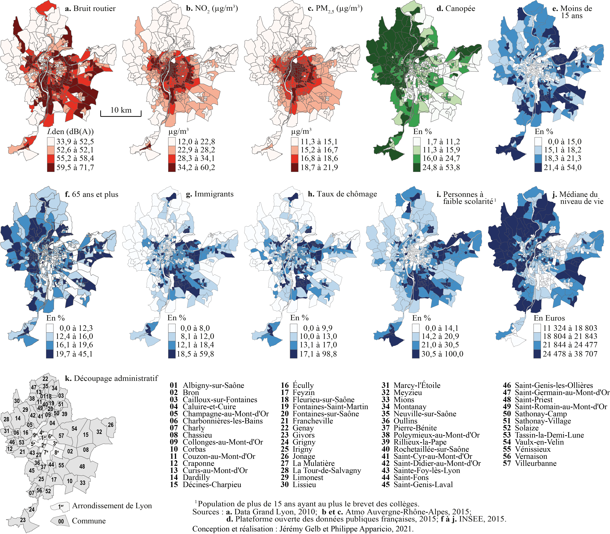
1.1.2 Jeu de données sur la région métropolitaine de Montréal
Deuxièmement, nous utiliserons un jeu de données spatiales sur les parts modales dans la région de Montréal extraites du recensement de 2021 de Statistique Canada pour la région métropolitaine de Montréal (tableau 1.2). En guise d’exemple, les proportions des navetteurs utilisant respectivement le transport en commun et l’automobile par secteur de recensement sont présentées à la figure 1.2.
| Nom | Intitulé | Moy. | E.-T. |
|---|---|---|---|
| prt_monoparental | Proportion de familles monoparentales | 0,2 | 0,1 |
| prt_minorite_vis | Proportion de minorités visibles | 0,3 | 0,2 |
| prt_chomage | Proportion de chômeurs | 0,1 | 0,0 |
| prt_personnes_faibles_revenu | Proportion de personnes à faible revenu | 7,9 | 6,3 |
| revenu_median | Revenu médian des ménages (milliers de dollars) | 40,2 | 9,5 |
| densite_population_km2 | Habitants au km2 | 5 758,2 | 5 429,8 |
| mode_tc | Transports en commun (effectifs) | 242,7 | 197,8 |
| mode_auto | Automobile (effectifs) | 1 200,3 | 811,9 |
| mode_pieton | Marche (effectifs) | 90,6 | 70,7 |
| mode_velo | Vélo (effectifs) | 28,0 | 34,2 |
| total_commuters | Total navetteurs (effectifs) | 1 588,4 | 803,5 |
| acs_idx_emp_velo | Accessibilité aux emplois en heure de pointe à vélo | 0,2 | 0,2 |
| acs_idx_emp_tc_peak | Accessibilité aux emplois en heure de pointe en transport en commun | 0,2 | 0,2 |
| acs_idx_emp_pieton | Accessibilité aux emplois en heure de pointe à la marche | 0,1 | 0,1 |
| prt_tc | Proportion de navetteurs en transport en commun | 0,2 | 0,1 |
| prt_auto | Proportion de navetteurs en auto | 0,7 | 0,2 |
| prt_actif | Proportion de naveteurs en transport actif (vélo et marche) | 0,1 | 0,1 |
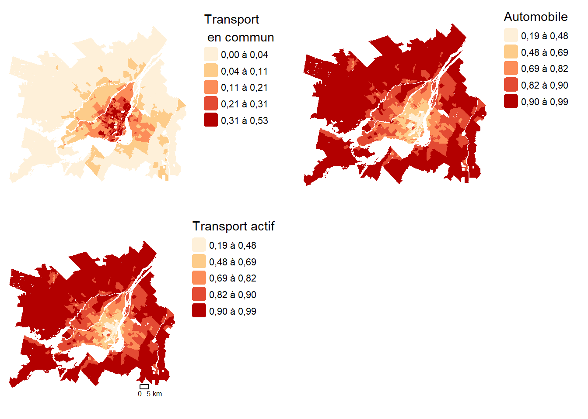
1.1.3 Jeu de données sur Barcelone
Troisièmement, nous utiliserons un jeu de données spatiales (Barcelone) pour la ville de Barcelone (Catalogne, Espagne). Ce jeu de données spatiales comprend quatorze variables, dont cinq environnementales (EN), six socioéconomiques (SE), une géographique (GE) et un variable binaire (BI), pour les 1068 entités polygonales de recensement formant la ville de Barcelone (tableau 1.3 et figure 1.1).
| Nom | Intitulé | Type | Moy. | E.-T. | Min. | Max. |
|---|---|---|---|---|---|---|
| NO2 | Dioxyde d’azote (ug/m3) | EN | 37,0 | 6,2 | 16,3 | 61,4 |
| PM25 | Particules fines (PM\(_{2,5}\)) | EN | 16,4 | 2,8 | 12,5 | 22,5 |
| Arbres | Nombre d’arbres | EN | 143,8 | 179,1 | 0,0 | 3 055,0 |
| Surf | Surface bâtie (m2) | EN | 114 978,3 | 189 232,3 | 0,0 | 5 606 600,0 |
| Parcs | Espaces verts (m2) | EN | 8 346,8 | 60 745,6 | 0,0 | 1 832 077,0 |
| PopTot | Population | SE | 1 506,3 | 341,0 | 583,0 | 3 446,0 |
| Densite | Habitants au km2 | SE | 42 160,8 | 22 311,7 | 78,2 | 153 770,3 |
| Revenu | Revenu des ménages (Euros) | SE | 37 462,1 | 12 683,9 | 19 056,0 | 89 015,0 |
| Pct_Img | Immigrants non européens (%) | SE | 10,9 | 6,6 | 1,1 | 51,0 |
| Pct0_4 | Moins de 4 ans (%) | SE | 3,7 | 1,0 | 0,9 | 11,3 |
| Pct_Plus80 | 80 ans et plus (%) | SE | 7,7 | 2,4 | 1,2 | 23,8 |
| Distance | Distance du centre (m) | GE | 2 987,3 | 1 573,7 | 0,0 | 8 057,0 |
| ClusterUE | Cluster of UE Immigrants | BI | 0,6 | 0,5 | 0,0 | 1,0 |
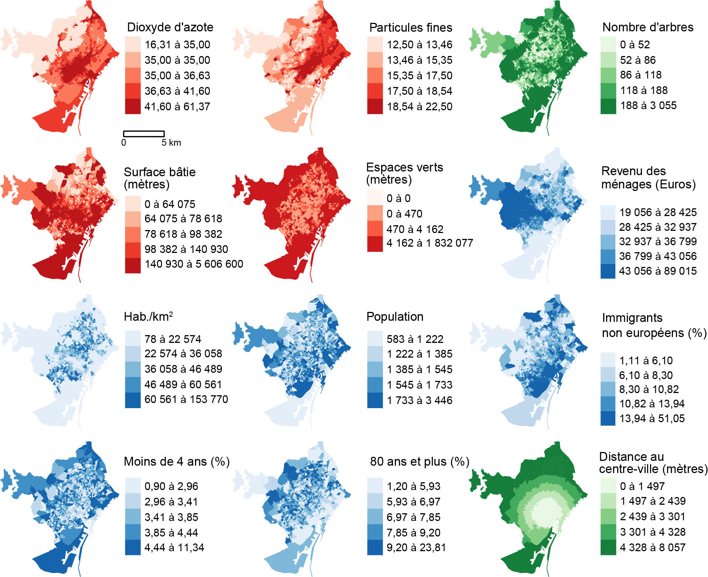
1.2 Matrices de pondération spatiale
Utilité des matrices de pondération spatiale
Ces matrices permettent de définir les relations spatiales entre les entités spatiales d’une couche géographique, et plus spécifiquement la manière de mesurer leur relation d’adjacence (voisinage) ou de proximité (distance). Nous verrons qu’elles sont largement utilisées dans les régressions spatiales, notamment dans les modèles d’économétrie spatiale abordés dans la seconde partie du livre. Elles sont aussi nécessaires au calcul des mesures d’autocorrélation globales ou locales (section 1.4.2) et à la construction des variables spatialement décalées (section 1.3).
Il existe huit principales matrices de pondération spatiale regroupées en deux grandes catégories : celles de contiguïté (basées sur l’adjacence) et celles de proximité (basées sur la distance) (tableau 1.4). Lorsque la couche géographique est composée de points, seules les matrices de proximité peuvent être utilisées.
| Matrice | Points | Lignes | Polyg. | Raster |
|---|---|---|---|---|
| Matrices de contiguïté (basées sur l’adjacence) | ||||
| Partage d’un nœud (Queen) | X | X | X | |
| Partage d’un segment (Rook) | X | X | X | |
| Partage d’un nœud et ordre d’adjacence (Queen) | X | X | X | |
| Partage d’un segment et ordre d’adjacence (Rook) | X | X | X | |
| Matrices de proximité (basées sur la distance) | ||||
| Connectivité selon la distance | X | X | X | X |
| Inverse de la distance | X | X | X | X |
| Inverse de la distance au carré | X | X | X | X |
| Nombre de plus proches voisins | X | X | X | X |
1.2.1 Matrices de contiguïté
La relation d’adjacence (de contiguïté) vise à déterminer si deux entités spatiales sont ou non voisines selon le partage soit d’un nœud, soit d’un segment (frontière commune). La contiguïté est liée à la notion de topologie qui prend en compte les relations de voisinage entre des entités spatiales, sans tenir compte de leurs tailles et de leurs formes géométriques. Elle peut être représentée à partir d’une matrice de contiguïté (avec une valeur de 1 quand deux entités sont voisines et de 0 pour une situation inverse) ou d’un graphe (formé de points représentant les entités spatiales et de lignes reliant les entités voisines) (figure 1.4).
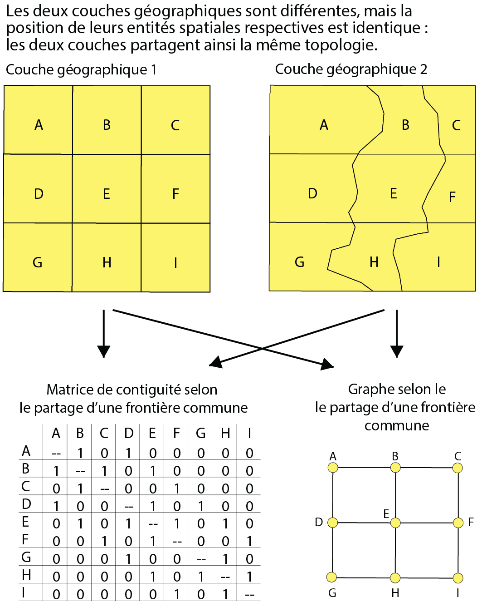
Trois évaluations de la contiguïté sont représentées à la figure 1.5 :
Adjacence selon le partage d’un segment, soit d’une frontière commune entre les polygones (A).
Adjacence selon le partage d’un nœud (B).
Ordre d’adjacence selon le partage d’une frontière commune (C). L’ordre d’adjacence indique le nombre de frontières à traverser pour se rendre à l’entité spatiale contiguë, soit :
Ordre 1 : une frontière à traverser pour se rendre dans l’entité spatiale adjacente.
Ordre 2 : deux frontières à traverser pour atteindre les entités de la deuxième couronne.
Ordre 3 : trois frontières à traverser pour atteindre les entités de la troisième couronne.
Etc.
Bien entendu, les ordres d’adjacence peuvent être également définis selon le partage d’un nœud commun.
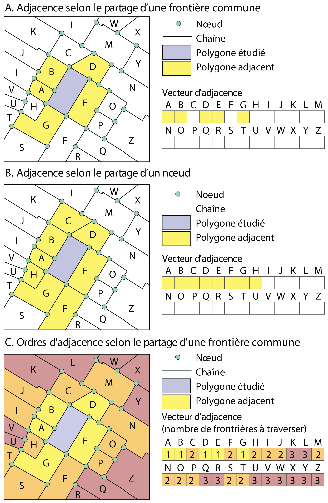
Habituellement appelée \(\mathbf{W}\), la matrice de contiguïté est binaire selon le partage tant d’un nœud (Queen en anglais) (équation 1.1) que d’un segment commun (Rook en anglais) (équation 1.2).
\[ w_{ij} = \begin{cases} 1 & \text{si les entités spatiales }i \text{ et }j \text{ ont au moins un nœud commun; } i \ne j\\ 0 & \text{sinon} \end{cases} \tag{1.1}\]
\[ w_{ij} = \begin{cases} 1 & \text{si les entités spatiales }i \text{ et }j \text{ partagent une frontière commune; } i \ne j\\ 0 & \text{sinon} \end{cases} \tag{1.2}\]
1.2.2 Matrices de proximité
Pour construire une matrice de pondération spatiale selon la proximité, nous pouvons utiliser plusieurs types de distances (Apparicio et al. 2017) : certaines sont cartésiennes, d’autres, dites réticulaires, sont calculées à partir d’un réseau de rues (figure 1.6).
Les distances cartésiennes – euclidienne et de Manhattan (équation 1.3 et équation 1.4) – sont facilement calculables à partir des coordonnées géographiques (x,y) lorsque la couche géographique est dans un système de projection plane (figure 1.6, a). Si la projection de la couche est sphérique (longitude/latitude), il convient d’utiliser la formule de haversine (basée sur la trigonométrie sphérique) pour obtenir la distance à vol d’oiseau (équation 1.5).
Par contre, comme leurs noms l’indiquent, le calcul des distances réticulaires (figure 1.6, b) nécessite d’avoir un réseau de rues dans un système d’information géographique (par exemple, l’extension Network Analyst d’ArcGIS Pro) ou dans R (notamment avec le package R5R) pour calculer le chemin le plus rapide (voir le chapitre intitulé Mesures d’accessibilité spatiale selon différents modes de transport (Apparicio et Gelb 2024)).
\[ d_{ij} = \sqrt{(x_i-x_j)^2+(y_i-y_j)^2} \tag{1.3}\]
\[ d_{ij} = \lvert x_i-x_j \rvert + \lvert y_i-y_j \rvert \tag{1.4}\]
\[ d_{ij} = 2R \cdot \text{ arcsin} \left( \sqrt{\text{sin}^2 \left( \frac{\delta _i - \delta _j}{2} \right) + \text{cos }\delta _i \cdot \text{cos }\delta _j \cdot \text{sin}^2 \left( \frac{\phi _i - \phi _j}{2} \right)} \right) \tag{1.5}\]
avec \(R\) étant le rayon de la terre; \(\delta _i\) et \(\delta _j\) les coordonnées de longitude pour les points \(i\) et \(j\); \(\phi _i\) et \(\phi _j\) les coordonnées de latitude pour les points \(i\) et \(j\).
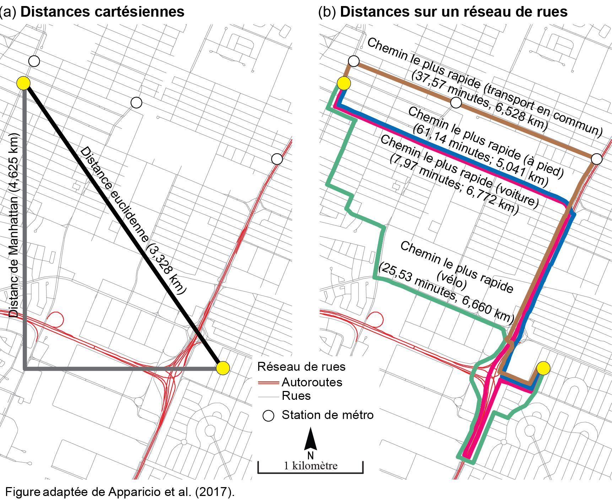
1.2.2.1 Matrice de distance binaire (de connectivité)
À partir d’une matrice de distance entre les entités spatiales d’une couche géographique, il est possible de créer une matrice de pondération binaire (équation 1.6). Ce type de matrice est habituellement appelée matrice de connectivité. Il convient alors de fixer un seuil de distance maximal. Par exemple, avec un seuil de 500 mètres, \(w_{ij}=1\) si la distance entre les entités spatiales \(i\) et \(j\) est inférieure ou égale à 500 mètres; sinon \(w_{ij}=0\). Notez que pour des lignes et des polygones, la distance est habituellement calculée à partir de leurs centroïdes.
\[ w_{ij} = \begin{cases} 1 & \text{si }d_{ij}\leq{\bar{d}}\text{; } i \ne j\\ 0 & \text{sinon} \end{cases} \tag{1.6}\]
avec \(d_{ij}\) étant la distance entre les entités spatiales \(i\) et \(j\), et \(\bar{d}\) étant un seuil de distance maximal fixé par la personne utilisatrice (par exemple, 500 mètres).
En guise d’exemple, à la figure 1.7, seuls les polygones jaunes seraient considérés comme voisins du polygone bleu avec un seuil de distance maximal fixé à 2,5 kilomètres (valeur de 1); les roses se verraient affecter la valeur de 0.
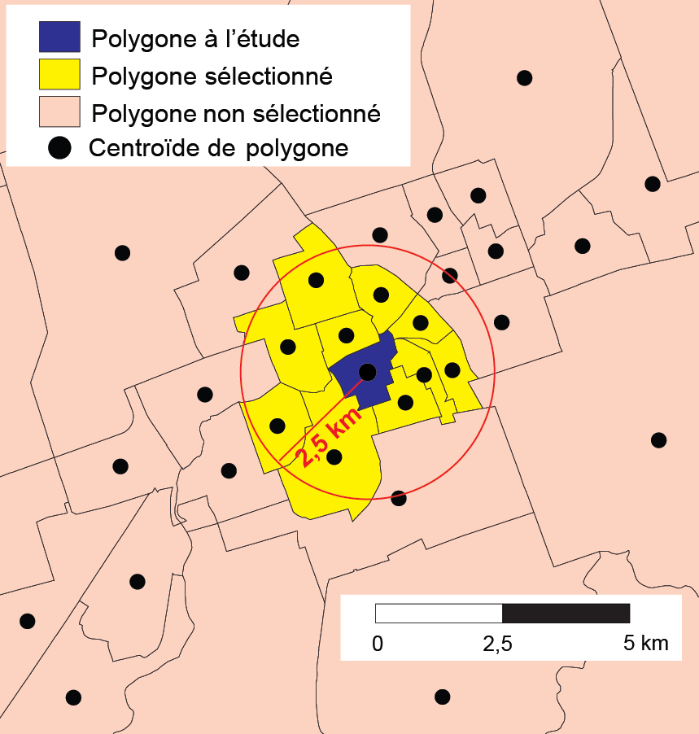
1.2.2.2 Matrices basées sur la distance
Une fois les distances calculées entre les entités spatiales, les pondérations peuvent être calculées avec l’inverse de la distance (\(1/d_{ij}\)) ou l’inverse de la distance au carré (\(1/d_{ij^2}\)) (équation 1.7).
\[ w_{ij} = \begin{cases} \frac{1}{d_{ij}^{\gamma}} &\\ 0 & \text{si } i=j \end{cases} \tag{1.7}\]
avec \(\gamma = 1\) pour une matrice de l’inverse de la distance et \(\gamma = 2\) pour l’inverse de la distance au carré.
Analysons le graphique à la figure 1.8. Premièrement, nous constatons que plus la distance est grande, plus la valeur de la pondération est faible et inversement. De la sorte, nous accordons un rôle plus important aux entités spatiales proches les unes des autres qu’à celles éloignées. Deuxièmement, les pondérations chutent beaucoup plus rapidement avec l’inverse de la distance au carré qu’avec l’inverse de la distance. Autrement dit, le recours à une matrice de pondération calculée avec l’inverse de la distance au carré a comme effet d’accorder un poids plus important aux entités géographiques très proches.
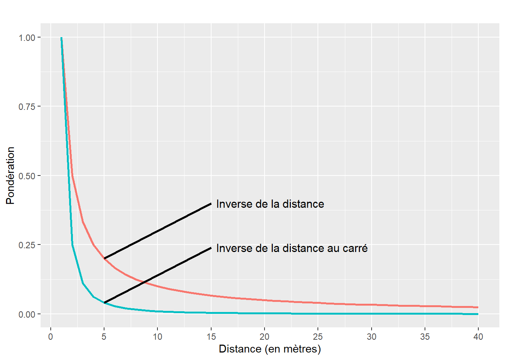
Notez que l’équation 1.7 peut être légèrement modifiée en introduisant un seuil maximal de la distance au-delà duquel les pondérations sont mises à 0 (équation 1.8). Autrement dit, cela permet de ne pas tenir compte des entités spatiales distantes à plus d’un seuil fixé par l’analyste, ce qui est particulièrement intéressant lorsque vous analysez un phénomène dont la diffusion (ou propagation) cesse au-delà d’une certaine distance.
\[ w_{ij} = \begin{cases} \frac{1}{d_{ij}^{\gamma}} & \text{si }d_{ij}\leq{\bar{d}}\\ 0 & \text{si }d_{ij}>{\bar{d}}\\ 0 & \text{si } i=j \end{cases} \tag{1.8}\]
1.2.2.3 Matrices selon le critère des plus proches voisins
Une autre façon très utilisée pour définir une matrice de proximité à partir d’une matrice de distance consiste à retenir uniquement les n plus proches voisins. La matrice est aussi binaire avec les valeurs de 1 si les observations sont parmi les n plus proches de l’entité spatiale \(i\) et de 0 pour une situation inverse.
1.2.3 Standardisation des matrices de pondération spatiale en ligne
Il est recommandé de standardiser les matrices de pondération en ligne. La somme de la matrice de pondération sera alors égale au nombre d’entités spatiales de la couche géographique.
Quel est l’intérêt de la standardisation?
Nous verrons dans les sections suivantes que ces matrices sont utilisées pour évaluer le degré d’autocorrélation spatiale globale et locale. Or, il est fréquent de comparer les valeurs des mesures d’autocorrélation spatiale obtenues avec différentes matrices d’adjacence et de proximité (contiguïté selon le partage d’un nœud, d’une frontière commune; inverse de la distance, inverse de la distance au carré, etc.). Autrement dit, la standardisation des matrices de pondération spatiale permet de vérifier si le degré de (dis)ressemblance des entités spatiales en fonction d’une variable donnée est plus fort avec une matrice de contiguïté, d’inverse de la distance, d’inverse de la distance au carré, etc.
Pour illustrer comment réaliser une standardisation, nous utilisons une couche géographique comprenant peu d’entités spatiales, soit celle des quatre arrondissements de la ville de Sherbrooke (figure 1.9).
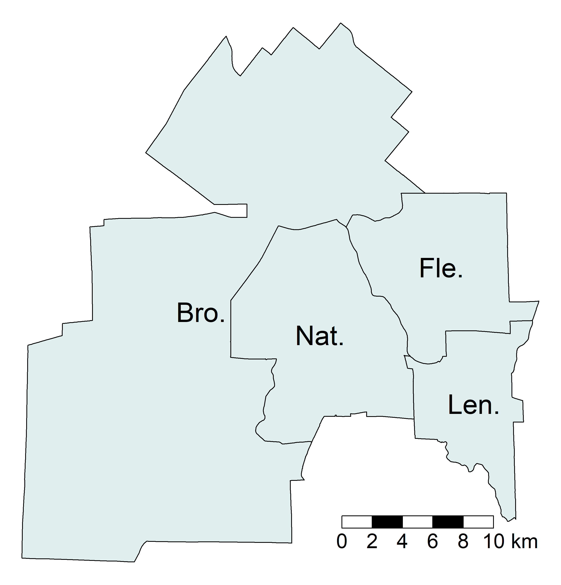
Au tableau 1.5, différentes matrices de contiguïté et de distance ont été calculées, puis standardisées. Voici comment interpréter les différentes sections du tableau :
Contiguïté selon le partage d’une frontière commune. La valeur de 1 signale que deux arrondissements sont voisins, sinon la valeur est à 0. Tel qu’indiqué aux équations 1.1 et 1.2, un arrondissement ne peut être voisin de lui-même (ex.: valeur de 0 pour la cellule
Bro.etBro.). L’arrondissement de Brompton–Rock Forest–Saint-Élie–Deauville (Bro.) a deux voisins, soit ceux des Nations et de Fleurimont (Nat.etFle.), comme indiqué par la valeur 2 dans la colonnetotal. Par contre, les arrondissements des Nations et de Fleurimont sont voisins de tous les autres (valeur de 3 dans la colonnetotal).Standardisation de la matrice de contiguïté. Il suffit de diviser chaque valeur de la matrice de contiguïté par la somme de la ligne correspondante. De la sorte, la somme de chaque ligne est égale à 1 et la somme de l’ensemble des valeurs de la matrice est égale au nombre d’entités spatiales (ici 4).
Distance (km). Nous avons calculé la distance euclidienne en kilomètres entre les centroïdes des arrondissements.
Inverse de la distance. Les valeurs sont obtenues avec la formule \(1/_{dij}\). Par exemple, entre
Bro.etNat., nous avons \(1/7,9930 = 0,1251\).Inverse de la distance au carré. Les valeurs sont obtenues avec la formule \(1/_{dij^2}\). Par exemple, entre
Bro.etNat., nous avons \(1/7,9930^2 = 0,0160\).Standardisation de l’inverse de la distance. Comme précédemment, il suffit de diviser chaque valeur de la matrice par la somme de la ligne correspondante. Par exemple, pour
Bro.etNat., nous avons \(0,1251 / 0,3241 = 0,3860\). Remarquez que la somme des lignes est bien égale à 1.Standardisation de l’inverse de la distance au carré. Comme précédemment, il suffit de diviser chaque valeur de la matrice par la somme de la ligne correspondante. Par exemple, pour
Bro.etNat., nous avons \(0,0160 / 0,0360 = 0,4440\). Remarquez que la somme des lignes est bien égale à 1.
| Arrondissement | Bro. | Nat. | Len. | Fle. | Somme (lignes) |
|---|---|---|---|---|---|
| Matrice de contiguïté selon le partage d’une frontière commune | |||||
| Bro. | 0,0000 | 1,0000 | 0,0000 | 1,0000 | 2,0000 |
| Nat. | 1,0000 | 0,0000 | 1,0000 | 1,0000 | 3,0000 |
| Len. | 0,0000 | 1,0000 | 0,0000 | 1,0000 | 2,0000 |
| Fle. | 1,0000 | 1,0000 | 1,0000 | 0,0000 | 3,0000 |
| Standardisation de la matrice de contiguïté | |||||
| Bro. | 0,0000 | 0,5000 | 0,0000 | 0,5000 | 1,0000 |
| Nat. | 0,3330 | 0,0000 | 0,3330 | 0,3330 | 1,0000 |
| Len. | 0,0000 | 0,5000 | 0,0000 | 0,5000 | 1,0000 |
| Fle. | 0,3330 | 0,3330 | 0,3330 | 0,0000 | 1,0000 |
| Distance (km) | |||||
| Bro. | 0,0000 | 7,9930 | 18,9940 | 16,1140 | |
| Nat. | 7,9930 | 0,0000 | 11,1190 | 9,1650 | |
| Len. | 18,9940 | 11,1190 | 0,0000 | 9,2590 | |
| Fle. | 16,1140 | 9,1650 | 9,2590 | 0,0000 | |
| Matrice selon l’inverse de la distance | |||||
| Bro. | 0,0000 | 0,1251 | 0,0526 | 0,0621 | 0,2398 |
| Nat. | 0,1251 | 0,0000 | 0,0899 | 0,1091 | 0,3241 |
| Len. | 0,0526 | 0,0899 | 0,0000 | 0,1080 | 0,2505 |
| Fle. | 0,0621 | 0,1091 | 0,1080 | 0,0000 | 0,2792 |
| Matrice selon l’inverse de la distance au carré | |||||
| Bro. | 0,0000 | 0,0160 | 0,0030 | 0,0040 | 0,0230 |
| Nat. | 0,0160 | 0,0000 | 0,0080 | 0,0120 | 0,0360 |
| Len. | 0,0030 | 0,0080 | 0,0000 | 0,0120 | 0,0230 |
| Fle. | 0,0040 | 0,0120 | 0,0120 | 0,0000 | 0,0280 |
| Standardisation de l’inverse de la distance | |||||
| Bro. | 0,0000 | 0,5220 | 0,2190 | 0,2590 | 1,0000 |
| Nat. | 0,3860 | 0,0000 | 0,2770 | 0,3370 | 1,0000 |
| Len. | 0,2100 | 0,3590 | 0,0000 | 0,4310 | 1,0000 |
| Fle. | 0,2220 | 0,3910 | 0,3870 | 0,0000 | 1,0000 |
| Standardisation de l’inverse de la distance au carré | |||||
| Bro. | 0,0000 | 0,6960 | 0,1300 | 0,1740 | 1,0000 |
| Nat. | 0,4440 | 0,0000 | 0,2220 | 0,3330 | 1,0000 |
| Len. | 0,1300 | 0,3480 | 0,0000 | 0,5220 | 1,0000 |
| Fle. | 0,1430 | 0,4290 | 0,4290 | 0,0000 | 1,0000 |
1.2.4 Mise en œuvre dans R
Construction des matrices dans R avec le package spdep.
Le package spdep dispose de différentes fonctions pour construire des matrices de contiguïté, de connectivité et de distance :
poly2nbpour des matrices de contiguïté.nblagetnblag_cumulpour des matrices de contiguïté avec des ordres d’adjacence.dnearneighpour des matrices de connectivité.as.matrix(dist(coords))etmat2listwpour des matrices de distance.knn2nbpour des matrices selon le critère des plus proches voisins.
1.2.4.1 Matrices de pondération spatiale selon la contiguïté
Pour créer des matrices de pondération spatiale selon la contiguïté, nous utilisons deux fonctions du package spdep :
poly2nb(objet sf, queen = TRUE)crée une matrice de contiguïté sous la forme d’une classenb(liste de voisins). Avec le paramètrequeen = TRUE, la contiguïté est évaluée selon le partage d’un nœud; avecqueen = FALSE, la contiguïté est évaluée selon le partage d’un segment (frontière). La matrice spatiale comprend une ligne par polygone avec les index de ceux qui sont adjacents. Par exemple,Queen[[1]]renvoie la liste des polygones voisins à la première entité spatiale, soit24 36 44 73, c’est-à-dire quatre voisins.nb2listw(objet nb, zero.policy = TRUE, style = "W")crée une matrice de pondération spatiale à partir de n’importe quelle matrice spatiale (de contiguïté ou de distance). Le paramètrestyle = "W", qui est par défaut, permet de standardiser la matrice en ligne. Par exemple,w_queen$weights[[1]]renvoie les valeurs des pondérations pour la première entité spatiale, soit0.25 0.25 0.25 25(0,25 = 1 / 4 voisins). Pour obtenir une matrice non standardisée, vous devez écrirestyle = "B", alorsw_queen$weights[[1]]renverra les valeurs de1 1 1 1.
library(sf) # pour importer des couches géographiques
library(spdep) # pour construire les matrices de pondération
## Utilisation du jeu de données sur l'agglomération de Lyon
load("data/Lyon.Rdata")
## Matrice selon le partage d'un nœud (Queen)
# Création de la matrice spatiale
nb_queen <- poly2nb(LyonIris, queen = TRUE)
# Affichage de la première ligne de la matrice
nb_queen[[1]][1] 27 36 44 73# Création de la matrice de pondération avec une standardisation en ligne
w_queen <- nb2listw(nb_queen, zero.policy = TRUE, style = "W")
# Affichage de la première ligne des pondérations standardisée
w_queen$weights[[1]][1] 0.25 0.25 0.25 0.25cat("La somme de la première ligne de la matrice de pondération est égale à",
sum(w_queen$weights[[1]]))La somme de la première ligne de la matrice de pondération est égale à 1# Affichage de la première ligne des pondérations non standardisée
nb2listw(nb_queen, zero.policy = TRUE, style = "B")$weights[[1]][1] 1 1 1 1## Matrice selon le partage d'un segment (Rook)
nb_rook <- poly2nb(LyonIris, queen = FALSE)
w_rook <- nb2listw(nb_rook, zero.policy = TRUE, style = "W")
## Comparaison des deux matrices de contiguïté
# Résultat de la matrice de pondération (Queen)
summary(w_queen)Characteristics of weights list object:
Neighbour list object:
Number of regions: 506
Number of nonzero links: 2854
Percentage nonzero weights: 1.114687
Average number of links: 5.640316
Link number distribution:
2 3 4 5 6 7 8 9 10 11 12 14 17
13 50 84 108 103 70 41 22 7 5 1 1 1
13 least connected regions:
81 91 105 148 160 174 183 325 425 468 480 489 506 with 2 links
1 most connected region:
154 with 17 links
Weights style: W
Weights constants summary:
n nn S0 S1 S2
W 506 256036 506 192.1431 2097.903# Résultat de la matrice de pondération (Rook)
summary(w_rook)Characteristics of weights list object:
Neighbour list object:
Number of regions: 506
Number of nonzero links: 2660
Percentage nonzero weights: 1.038916
Average number of links: 5.256917
Link number distribution:
2 3 4 5 6 7 8 9 10 11 12 15
14 60 104 126 97 58 24 13 6 2 1 1
14 least connected regions:
81 91 105 148 160 174 183 325 376 425 468 480 489 506 with 2 links
1 most connected region:
154 with 15 links
Weights style: W
Weights constants summary:
n nn S0 S1 S2
W 506 256036 506 204.0416 2099.4051.2.4.2 Matrices de pondération spatiale selon la contiguïté et un ordre d’adjacence
Le code ci-dessous génère les matrices de pondération spatiale standardisée en ligne selon les ordres d’adjacence de 1 à 3.
# Création des matrices d'ordre 1, 2 et 3
nb_queen1 <- poly2nb(LyonIris, queen = TRUE)
nb_queen2 <- nblag_cumul(nblag(nb_queen1, 2))
nb_queen3 <- nblag_cumul(nblag(nb_queen1, 3))
# Création des matrices de pondération spatiale standardisée en ligne
w_queen1 <- nb2listw(nb_queen1, zero.policy = TRUE, style = "W")
w_queen2 <- nb2listw(nb_queen2, zero.policy = TRUE, style = "W")
w_queen3 <- nb2listw(nb_queen3, zero.policy = TRUE, style = "W")1.2.4.3 Matrice de connectivité (matrice distance binaire)
La fonction dnearneigh(matrice des coordonnées ou points sf, d1 =, d2 =) crée une matrice de connectivité à partir d’une couche de points. Les paramètres d1 et d2 permettent de spécifier le rayon de recherche (ex. : avec d1 = 0 et d2 = 2500, le seuil maximal de distance est de 2500 mètres). Si votre couche sf comprend des lignes ou des polygones, utilisez la fonction st_centroid ou st_point_on_surface() pour les convertir en points (section 1.2.2).
## Conversion des polygones en points avec st_centroid
iris_centroides <- st_centroid(LyonIris)
## Matrice binaire avec un seuil de 2500 mètres
connect_2500m <- dnearneigh(iris_centroides, d1 = 0, d2 = 2500)
## Matrice de pondération spatiale standardisée en ligne
w_connect_2500m <- nb2listw(connect_2500m, zero.policy = TRUE, style = "W")1.2.4.4 Matrices de pondération spatiale selon l’inverse de la distance et l’inverse de la distance au carré
Le code ci-dessous, qui permet de créer les matrices de l’inverse de la distance et de l’inverse de la distance au carré, comprend les étapes suivantes :
Récupération des coordonnées géographiques des centroïdes des entités spatiales.
Création de la matrice avec la distance euclidienne \(n \times n\) (\(n\) étant le nombre d’entités spatiales de la couche).
Calcul des matrices d’inverse de la distance et d’inverse de la distance au carré.
Standardisation de ces deux matrices et transformation en objets
listwavec la fonctionmat2listw.
## Coordonnées des centroïdes des entités spatiales
coords <- st_coordinates(iris_centroides)
## Création de la matrice avec la distance euclidienne
distances <- as.matrix(dist(coords, method = "euclidean"))
# S’assurer que la diagonale de la matrice est à 0
diag(distances) <- 0
## Matrices d'inverse de la distance et d'inverse de la distance au carré
inv_distances <- ifelse(distances!=0, 1/distances, distances)
inv_distances2 <- ifelse(distances!=0, 1/distances^2, distances)
## Matrices de pondération spatiale standardisée en ligne
w_inv_distances <- mat2listw(inv_distances, style = "W")
w_inv_distances2 <- mat2listw(inv_distances2, style = "W")Intégration d’autres types de distance
À la section 1.2.2, nous avons vu que plusieurs types de distance peuvent être utilisés : cartésiennes (euclidienne et de Manhattan) et réticulaires (chemin le plus rapide à pied, à vélo, en automobile et en transport en commun).
Pour construire une matrice avec la distance de Manhattan, vous devez changer la valeur du paramètre method de la fonction dist comme suit : as.matrix(dist(coords, method = "manhattan")).
Pour intégrer une distance réticulaire, vous devez la calculer, soit dans R (Apparicio et Gelb 2024), soit dans un logiciel de système d’information géographique (QGIS ou ArcGIS Pro avec l’extension Network Analyst par exemple) et l’importer dans R. Le reste du code sera alors identique.
Nous avons vu qu’il est possible d’utiliser une matrice en fixant une distance maximale au-delà de laquelle les pondérations sont mises à 0 (équation 1.8). Le code ci-dessous permet de créer des matrices de pondération standardisée avec l’inverse de la distance et l’inverse de la distance au carré avec des seuils de 2500 et de 5000 mètres.
## Coordonnées des centroïdes des entités spatiales
coords <- st_coordinates(iris_centroides)
## Création de la matrice de distance
distances <- as.matrix(dist(coords, method = "euclidean"))
## Création de différentes matrices avec différents seuils
inv_distances_1000m <- ifelse(distances<=1000 & distances!=0, 1/distances, 0)
inv_distances_2500m <- ifelse(distances<=2500 & distances!=0, 1/distances, 0)
inv_distances_5000m <- ifelse(distances<=5000 & distances!=0, 1/distances, 0)
inv_distances2_2500m <- ifelse(distances<=2500 & distances!=0, 1/distances^2, 0)
inv_distances2_5000m <- ifelse(distances<=5000 & distances!=0, 1/distances^2, 0)
## Matrices de pondération spatiale standardisée en ligne
w_inv_distances_1000 <- mat2listw(inv_distances_1000m, style = "W", zero.policy = TRUE)
w_inv_distances_2500 <- mat2listw(inv_distances_2500m, style = "W", zero.policy = TRUE)
w_inv_distances_5000 <- mat2listw(inv_distances_5000m, style = "W", zero.policy = TRUE)
w_inv_distances2_2500 <- mat2listw(inv_distances2_2500m, style = "W", zero.policy = TRUE)
w_inv_distances2_5000 <- mat2listw(inv_distances2_5000m, style = "W", zero.policy = TRUE)Spécifier un seuil de distance trop réduit peut toutefois être problématique. Par exemple, sur les 506 IRIS de l’agglomération de Lyon, 68 n’ont pas de voisins à 1000 mètres, indiqués par le résultat suivant : 68 regions with no links.
summary(w_inv_distances_1000, zero.policy = TRUE)Characteristics of weights list object:
Neighbour list object:
Number of regions: 506
Number of nonzero links: 3992
Percentage nonzero weights: 1.559156
Average number of links: 7.889328
68 regions with no links:
5 9 11 16 20 22 26 29 39 46 49 51 59 64 67 69 79 81 88 97 98 99 103 105
108 113 114 117 118 121 124 126 128 129 130 131 133 135 137 141 143 151
153 157 158 160 161 162 163 165 166 167 168 169 171 176 177 178 179 181
184 185 186 370 377 387 415 506
86 disjoint connected subgraphs
Link number distribution:
0 1 2 3 4 5 6 7 8 9 10 11 12 13 14 15 16 17 18 19 20 21 22 23 24 25
68 39 25 28 27 30 34 40 38 14 18 12 13 16 8 10 11 11 10 13 7 11 7 3 5 5
26 28
2 1
39 least connected regions:
7 8 13 14 15 25 28 35 41 42 43 48 52 56 61 65 71 72 85 86 91 93 94 96 106 116 138 140 148 155 172 174 183 187 225 250 269 340 478 with 1 link
1 most connected region:
424 with 28 links
Weights style: W
Weights constants summary:
n nn S0 S1 S2
W 438 191844 438 203.0076 1789.585Réduction de la taille des matrices de distance
Plusieurs logiciels (notamment ArcGIS Pro et GeoDa) réduisent par défaut la taille des matrices de distance de la façon suivante : 1) construction d’une matrice de distance uniquement pour l’entité la plus proche (la matrice résultante est donc de dimension \(n \times 1\)); 2) obtention de la distance maximale dans cette matrice, soit la distance la plus grande entre une entité spatiale et celle la plus proche; 3) construction de la matrice de distance finale avec comme seuil la distance maximale obtenue à l’étape précédente.
Cette réduction procure deux avantages importants :
Une diminution considérable des temps de calcul, surtout pour les couches géographiques comprenant un nombre très élevé d’entités spatiales. Par exemple, avec une couche de 50 entités spatiales, la matrice des distances comprendra 2500 valeurs (50 \(\times\) 50 = 2500) tandis qu’avec 1000 entités spatiales, elle en comprendra un million (1000 \(\times\) 1000 = 1 000 000).
Comme décrit plus haut, il est préférable d’éviter d’avoir une matrice de distances avec des entités spatiales sans voisins, puisque cela a un impact négatif sur les mesures d’autocorrélation spatiale.
La syntaxe ci-dessous permet ainsi de construire des matrices de pondération (inverse de la distance et inverse de la distance au carré) à partir de la distance maximale d’un SR et son voisin le plus proche.
## Coordonnées des centroïdes des entités spatiales
coords <- st_coordinates(iris_centroides)
## Trouver le plus proche voisin
k1 <- knn2nb(knearneigh(coords))
## Affichage de la distance la plus proche pour les 506 IRIS
round(unlist(nbdists(k1, coords)), 0) [1] 506 739 776 451 1000 284 547 629 1206 449 1145 603 727 965 370
[16] 1835 389 334 725 1264 523 1543 449 710 990 1692 617 643 1145 509
[31] 489 488 600 334 841 407 770 301 1072 884 426 985 899 417 249
[46] 1316 588 426 1067 402 1366 718 452 657 696 600 759 482 1841 225
[61] 999 452 229 1616 418 220 1144 547 1482 284 985 926 417 716 678
[76] 355 345 603 1020 188 2040 325 841 770 767 727 767 1082 614 622
[91] 746 225 974 841 348 926 1108 1354 1290 545 220 355 1723 338 1686
[106] 370 188 1130 249 451 348 340 1063 1256 471 746 1094 1507 303 471
[121] 2332 831 301 1129 229 1638 677 2237 1092 2157 1050 452 1058 389 2523
[136] 682 1385 418 692 629 1097 459 1543 520 340 325 617 718 303 495
[151] 2218 369 1175 619 993 392 3366 1072 453 1050 1464 1385 1780 657 1181
[166] 1170 1324 1170 1477 352 1477 752 394 852 611 1562 1279 1279 1539 352
[181] 1035 611 394 1834 1300 1057 852 249 460 427 370 272 410 343 319
[196] 346 235 271 491 159 398 386 272 403 512 325 209 286 270 261
[211] 286 157 832 452 450 464 280 492 236 561 276 186 804 219 576
[226] 290 275 560 321 221 583 252 456 460 325 191 314 756 346 482
[241] 472 523 863 259 271 247 238 341 383 699 423 247 221 509 358
[256] 385 316 539 219 602 368 883 599 346 393 245 599 492 940 398
[271] 458 290 414 475 321 286 438 276 347 660 394 155 269 249 328
[286] 393 503 270 392 630 269 281 725 394 408 259 493 517 523 459
[301] 284 438 390 280 311 407 489 534 329 413 301 368 311 462 289
[316] 251 276 387 293 815 467 340 492 261 165 475 602 235 404 384
[331] 976 300 407 486 309 211 319 275 341 756 283 395 299 469 360
[346] 360 870 261 159 211 530 236 292 209 329 346 519 531 597 394
[361] 290 290 165 270 531 343 175 335 281 1046 398 390 267 267 507
[376] 358 1071 341 249 361 292 540 373 157 273 286 1173 253 423 442
[391] 472 274 299 318 335 345 487 503 278 442 341 660 249 238 238
[406] 511 295 725 469 220 481 422 416 456 1038 416 509 318 462 245
[421] 658 341 570 175 291 374 269 355 408 312 514 287 786 520 380
[436] 286 360 520 800 444 475 343 438 641 383 444 508 325 530 448
[451] 533 562 490 290 293 284 155 252 318 289 348 429 210 318 447
[466] 318 297 546 495 311 376 376 443 546 220 277 327 688 362 146
[481] 830 460 431 620 603 725 396 495 362 277 146 298 422 389 389
[496] 422 327 678 688 425 607 289 522 396 431 2365## Trouver la distance maximale
plusprochevoisin_max <- max(unlist(nbdists(k1, coords)))
cat("Distance maximale au plus proche voisin :", round(plusprochevoisin_max, 0), "mètres")Distance maximale au plus proche voisin : 3366 mètres## Matrice de distance avec la valeur maximale
# les voisins les plus proches avec le seuil de distance maximale
voisins_distmax <- dnearneigh(coords, 0, plusprochevoisin_max)
# Distances avec le seuil maximum
distances <- nbdists(voisins_distmax, coords)
# Inverse de la distance
inv_distances <- lapply(distances, function(x) (1/x))
# Inverse de la distance au carré
inv_distances2 <- lapply(distances, function(x) (1/x^2))
## Matrices de pondération spatiale standardisée en ligne
w_inv_distances <- nb2listw(voisins_distmax, glist = inv_distances, style = "W", zero.policy = TRUE)
w_inv_distances2 <- nb2listw(voisins_distmax, glist = inv_distances2, style = "W", zero.policy = TRUE)1.2.4.5 Matrices de pondération spatiale selon le critère des plus proches voisins
La fonction knearneigh du package spdep crée des matrices de distance selon le critère des plus proches voisins, dont le nombre est fixé avec le paramètre k.
## Coordonnées géographiques des centroïdes des polygones
coords <- st_coordinates(st_centroid(LyonIris))
## Matrices des plus proches voisins de 2 à 5
k2 <- knn2nb(knearneigh(coords, k = 2))
k3 <- knn2nb(knearneigh(coords, k = 3))
k4 <- knn2nb(knearneigh(coords, k = 4))
k5 <- knn2nb(knearneigh(coords, k = 5))
## Matrices de pondération spatiale standardisée en ligne
w_k2 <- nb2listw(k2, zero.policy = FALSE, style = "W")
w_k3 <- nb2listw(k3, zero.policy = FALSE, style = "W")
w_k4 <- nb2listw(k4, zero.policy = FALSE, style = "W")
w_k5 <- nb2listw(k5, zero.policy = FALSE, style = "W")L’ensemble des matrices en quelques lignes de code!
library(dplyr)
# Nom de la couche sf départ à changer au besoin
Couche.sf <- LyonIris
# Matrice de contiguïté
nb_queen <- poly2nb(Couche.sf, queen = TRUE)
nb_rook <- poly2nb(Couche.sf, queen = FALSE)
w_queen <- nb2listw(nb_queen, zero.policy = TRUE, style = "W")
w_rook <- nb2listw(nb_rook, zero.policy = TRUE, style = "W")
# Matrice de contiguïté (ordre 2 à 5)
w_rook2 <- nblag_cumul(nblag(nb_rook, 2)) %>% nb2listw(zero.policy = TRUE, style = "W")
w_rook3 <- nblag_cumul(nblag(nb_rook, 3)) %>% nb2listw(zero.policy = TRUE, style = "W")
w_rook4 <- nblag_cumul(nblag(nb_rook, 4)) %>% nb2listw(zero.policy = TRUE, style = "W")
w_rook5 <- nblag_cumul(nblag(nb_rook, 5)) %>% nb2listw(zero.policy = TRUE, style = "W")
# Matrice de connectivité binaire
centroides <- st_centroid(Couche.sf)
w_connect_2500m <- dnearneigh(centroides, d1 = 0, d2 = 2500) %>%
nb2listw(zero.policy = TRUE, style = "W")
# Inverse de la distance et inverse de la distance au carré (matrices complètes)
distances <- as.matrix(dist(st_coordinates(centroides), method = "euclidean"))
diag(distances) <- 0
w_inv_distances <- ifelse(distances!=0, 1/distances, distances) %>% mat2listw(style = "W")
w_inv_distances2 <- ifelse(distances!=0, 1/distances^2, distances) %>% mat2listw(style = "W")
# Inverse de la distance et inverse de la distance au carré (matrices réduites)
coords <- st_coordinates(centroides)
plusprochevoisin_max <- max(unlist(nbdists(knn2nb(knearneigh(coords)),coords)))
dists <- nbdists(dnearneigh(coords, 0, plusprochevoisin_max), coords)
w_inv_distances_reduite <- lapply(dists, function(x) (1/x)) %>%
nb2listw(voisins_distmax, glist = ., style = "W", zero.policy = TRUE)
w_inv_distances2_reduite <- lapply(dists, function(x) (1/x^2)) %>%
nb2listw(voisins_distmax, glist = ., style = "W", zero.policy = TRUE)
# Inverse de la distance et inverse de la distance au carré avec un seuil de distance
w_inv_distances_1000m <- ifelse(distances<=1000 & distances!=0, 1/distances, 0) %>%
mat2listw(style = "W", zero.policy = TRUE)
w_inv_distances_2500m <- ifelse(distances<=2500 & distances!=0, 1/distances, 0) %>%
mat2listw(style = "W", zero.policy = TRUE)
w_inv_distances_5000m <- ifelse(distances<=5000 & distances!=0, 1/distances, 0) %>%
mat2listw(style = "W", zero.policy = TRUE)
w_inv_distances2_2500m <- ifelse(distances<=2500 & distances!=0, 1/distances^2, 0) %>%
mat2listw(style = "W", zero.policy = TRUE)
w_inv_distances2_5000m <- ifelse(distances<=5000 & distances!=0, 1/distances^2, 0) %>%
mat2listw(style = "W", zero.policy = TRUE)
## Matrices des plus proches voisins de 2 à 5
w_k2 <- knn2nb(knearneigh(coords, k = 2)) %>% nb2listw(zero.policy = FALSE, style = "W")
w_k3 <- knn2nb(knearneigh(coords, k = 3)) %>% nb2listw(zero.policy = FALSE, style = "W")
w_k4 <- knn2nb(knearneigh(coords, k = 4)) %>% nb2listw(zero.policy = FALSE, style = "W")
w_k5 <- knn2nb(knearneigh(coords, k = 5)) %>% nb2listw(zero.policy = FALSE, style = "W")
## Sauvegarde des matrices
save(w_queen, w_rook,
w_rook2, w_rook3, w_rook4, w_rook5,
w_connect_2500m,
w_inv_distances, w_inv_distances2,
w_inv_distances_reduite, w_inv_distances2_reduite,
w_inv_distances_1000m, w_inv_distances_2500m,
w_inv_distances2_2500m, w_inv_distances2_5000m,
w_k2, w_k3, w_k4, w_k5,
file = "data/chap01/MatricesPonderations.Rdata")1.3 Variable spatialement décalée
À partir des matrices de pondérations standardisées en ligne, qu’elles soient de contiguïté ou de proximité, il est possible de calculer une version spatialement décalée d’une variable initiale. De la sorte, pour une entité spatiale i, il est possible de connaître la valeur moyenne d’une variable pour ses entités voisines ou proches (dépendamment si la matrice est définie selon la contiguïté ou la proximité). Au chapitre 2, nous verrons que ces variables spatiales décalées sont utilisées dans plusieurs modèles d’économétrie spatiale.
Comment calculer une variable spatialement décalée avec une matrice de pondération spatiale?
À la figure 1.10, nous détaillons le calcul de la valeur d’une variable spatialement décalée pour l’entité spatiale A à partir d’une matrice de contiguïté (selon le partage d’un segment) standardisée en ligne. Notez que A est adjacente à quatre entités spatiales (b, c, d et e).
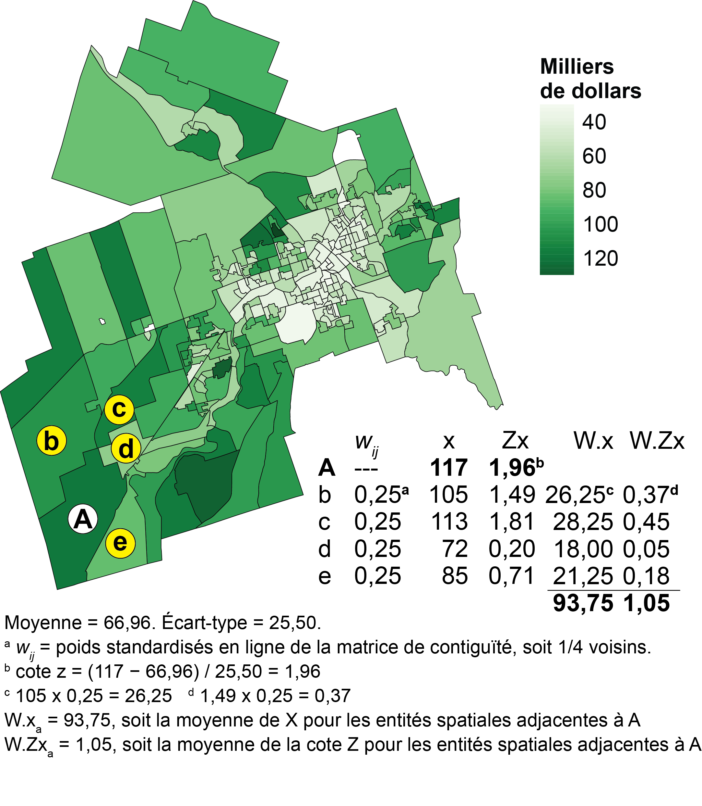
La fonction lag.listw du package spdep permet de créer une variable spatialement décalée en spécifiant la matrice de pondération spatiale et un vecteur numérique : wzx <- lag.listw(listW, zx). Dans la syntaxe ci-dessous, nous créons une version spatiale décalée de la variable dioxyde d’azote (NO2) de la couche sf LyonIris avec une matrice de pondération spatiale standardisée en ligne (définie selon la contiguïté avec le partage d’un segment, w_rook), puis nous cartographions les deux versions de la variable (initiale et spatialement décalée) à la figure 1.11.
# Chargement des données
library(tmap)
library(spdep)
load("data/Lyon.Rdata")
# Matrice de pondération spatiale standardisée en ligne selon la contiguïté
w_rook<- nb2listw(poly2nb(LyonIris, queen = FALSE), zero.policy = TRUE, style = "W")
# Variable spatialement décalée
LyonIris$W_NO2 <- lag.listw(w_rook, LyonIris$NO2)
# Cartographie avec tmap
tmap_mode("plot")
legende_parametres <- list(text.separator = "à",
decimal.mark = ",",
big.mark = " ")
carte1 <- tm_shape(LyonIris)+
tm_borders(col = "gray25", lwd=.2)+
tm_fill(col = "NO2", palette = "Reds", n = 5, style = "quantile",
legend.format = legende_parametres,
title = "(a) Variable initiale")+
tm_layout(frame = FALSE)+tm_scale_bar(breaks=c(0,5))
carte2 <- tm_shape(LyonIris)+
tm_borders(col = "gray25", lwd=.2)+
tm_fill(col = "W_NO2", palette = "Reds", n = 5, style = "quantile",
legend.format = legende_parametres,
title = "(b) Spatialement décalée")+
tm_layout(frame = FALSE)
tmap_arrange(carte1, carte2, ncol = 2, nrow = 1)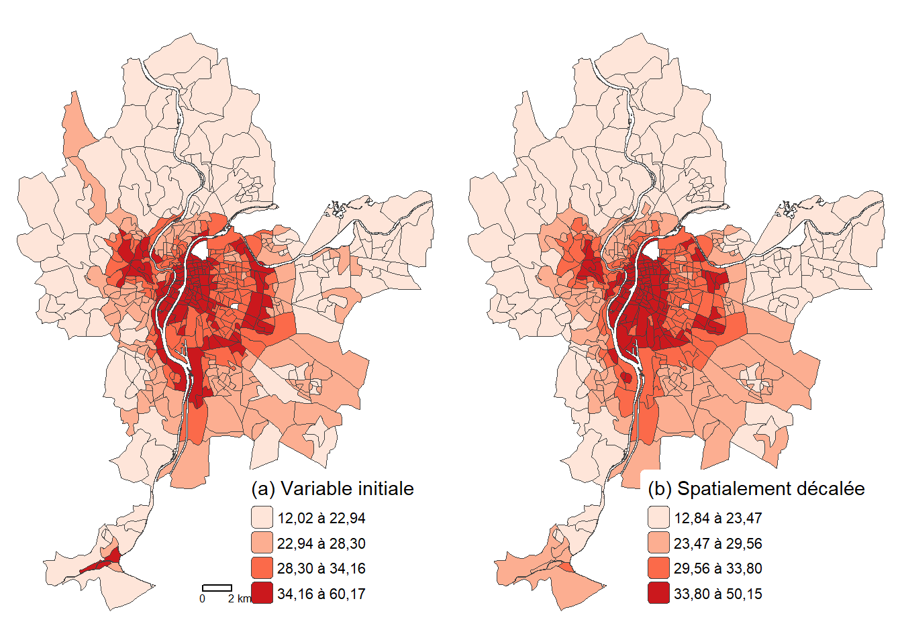
1.4 Autocorrélation spatiale
L’autocorrélation spatiale permet d’estimer la corrélation d’une variable par rapport à sa localisation dans l’espace. Autrement dit, elle permet de vérifier si les entités proches ou voisines ont tendance à être (dis)semblables en fonction d’un phénomène donné (soit une variable). Nous distinguons trois formes d’autocorrélation spatiale :
(a) Autocorrélation spatiale positive : lorsque les entités spatiales voisines ou proches se ressemblent davantage que celles non contiguës ou éloignées. Cela renvoie ainsi à la première loi de la géographie : « tout interagit avec tout, mais les objets proches ont plus de chance de le faire que les objets éloignés » (traduction libre) (Tobler 1970).
(b) Autocorrélation spatiale négative : lorsque les entités spatiales voisines ou proches ont tendance à être dissemblables, comparativement à celles non contiguës ou éloignées.
(c) Absence d’autocorrélation spatiale : lorsque les valeurs de la variable sont distribuées aléatoirement dans l’espace; autrement dit, lorsqu’il n’y a pas de relation entre le voisinage ou la proximité des entités spatiales et leur degré de ressemblance.
Différentes mesures d’autocorrélation spatiale
Nous distinguons habituellement les statistiques d’autocorrélation spatiale globales et locales :
Les statistiques d’autocorrélation spatiale globales renvoient une valeur pour l’ensemble de l’espace d’étude. Succinctement, elles permettent de vérifier si les entités proches ou voisines d’une couche géographique ont tendance à être (dis)semblables en fonction d’un phénomène donné (soit une variable).
Les mesures d’autocorrélation spatiale locales renvoient des valeurs pour chacune des entités spatiales. Succinctement, il s’agit de vérifier si chaque entité spatiale est significativement (dis)semblable de celles voisines ou proches.
Nous aborderons ici uniquement une statistique d’autocorrélation spatiale globale, soit le I de Moran, pour évaluer l’autocorrélation spatiale d’une variable continue. Pour aborder une panoplie de mesures globales ou locales, nous vous invitons à consulter le chapitre intitulé Autocorrélation spatiale (Apparicio et Gelb 2024).
1.4.1 Formulation du I de Moran
Pour évaluer le degré d’autocorrélation spatiale d’une variable continue, les deux principales statistiques utilisées sont le I de Moran (1950) et le c de Geary (1954). Nous présentons ici uniquement le I de Moran pour deux raisons principales. Premièrement, étant basée sur la covariance, son interprétation est bien plus facile que celle du c de Geary (basé sur la variance des écarts), c’est-à-dire qu’elle est très similaire au bien connu coefficient de corrélation de Pearson (Apparicio et Gelb 2022). Deuxièmement, elle constitue la mesure la plus utilisée. Le I de Moran s’écrit :
\[ I = \frac{n}{\Sigma_{i=1}^n \Sigma_{j=1}^n w_{ij}} \frac{\Sigma_{i=1}^n \Sigma_{j=1}^n w_{ij}(x_i-\bar{x})(x_j-\bar{x})}{\Sigma_{i=1}^n (x_i-\bar{x})^2} \text{ avec :} \tag{1.9}\]
n, le nombre d’entités spatiales dans la couche géographique;
\(w_{ij}\), la valeur de la pondération spatiale entre les entités spatiales \(i\) et \(j\);
\(x_i\) et \(x_j\), les valeurs de la variable continue pour les entités spatiales \(i\) et \(j\);
\(\bar{x}\), la valeur moyenne de la variable \(X\) à l’étude.
Standardisation de la matrice de pondération et I de Moran
Nous avons vu que si la matrice de pondération spatiale est standardisée en ligne (section 1.2.3), alors chaque ligne de la matrice vaut 1 et la somme de l’ensemble des valeurs de la matrice est égale au nombre d’entités spatiales (\(n\)). Or, dans l’équation 1.9, \(\Sigma_{i=1}^n \Sigma_{j=1}^n w_{ij}\) représente la somme des pondérations de la matrice, soit \(n\) si elles sont standardisées en ligne. Puisque \(\frac{n}{n}=1\), alors l’équation du I de Moran est simplifiée comme suit :
\[ I = \frac{\Sigma_{i=1}^n \Sigma_{j=1}^n w_{ij}(x_i-\bar{x})(x_j-\bar{x})}{\Sigma_{i=1}^n (x_i-\bar{x})^2} \tag{1.10}\]
Comme évoqué dans la section 1.2.3, cela démontre l’intérêt de la standardisation : la comparaison des valeurs du I de Moran obtenues avec différentes matrices de contiguïté afin de sélectionner (éventuellement) celle avec laquelle l’autocorrélation spatiale est la plus forte.
1.4.2 Interprétation du I de Moran
Avec une matrice standardisée, la statistique du I de Moran varie de -1 à 1 et s’interprète de la façon suivante :
quand \(I > 0\), l’autocorrélation est positive, c’est-à-dire que les entités géographiques ont tendance à se ressembler d’autant plus qu’elles sont voisines ou proches;
quand \(I = 0\), l’autocorrélation est nulle, c’est-à-dire que la contiguïté ou la proximité spatiale des zones ne jouent aucun rôle;
quand \(I < 0\), l’autocorrélation est négative, c’est-à-dire que les entités géographiques ont tendance à être dissemblables d’autant plus qu’elles sont voisines ou proches.
Les limites de -1 et 1 sont les maximums théoriques du I de Moran. Dans la pratique, elles sont limitées par la matrice spatiale utilisée dans le calcul. En effet, selon la matrice spatiale, le maximum du I de Moran peut être inférieur à 1, et son minimum supérieur à -1. Le calcul de ces bornes propres à chaque matrice spatiale peut se faire en utilisant les maximums et minimums des valeurs propres de \(\frac{W+W^T}{2}\), quand la matrice spatiale est standardisée. À titre d’exemple, nous calculons ci-dessous les maximums et minimums possibles pour une matrice de contiguïté selon le partage d’un nœud (Queen) pour les 506 IRIS de l’agglomération de Lyon. Il apparaît ainsi que pour la matrice de contiguïté selon le partage d’un nœud (Queen), quelle soit la variable analysée, la valeur de I de Moran ne pourra pas dépasser les limites -0,64 et 1,04.
# Matrice de contiguïté selon le partage d'un nœud (Queen)
nb_queen <- poly2nb(LyonIris, queen = TRUE)
w_queen <- nb2listw(nb_queen, style = 'W')
queen_mat <- listw2mat(w_queen)
values <- range(eigen((queen_mat + t(queen_mat))/2)$values)
print(round(values,2))[1] -0.69 1.041.4.3 Significativité du I de Moran
Comme pour le coefficient de corrélation calculé entre deux variables, il est possible de tester la significativité de la valeur du I de Moran obtenue. Sans que nous détaillions les calculs de significativité, notez qu’il existe trois manières de tester la significativité :
selon l’hypothèse de la normalité;
selon l’hypothèse de la randomisation;
selon des permutations Monte-Carlo (habituellement avec 999 échantillons).
Comment calculer les trois tests de significativité du I de Moran?
Pour une description détaillée du calcul des trois tests, consultez l’ouvrage de Jean Dubé et Diego Legros (2014).
1.4.4 Mise en œuvre dans R
Calcul du I de Moran dans R
Pour illustrer le calcul de I de Moran dans R, nous utilisons la couche des IRIS de l’agglomération de Lyon. Les étapes suivantes sont réalisées :
- Construire une panoplie de matrices de pondération spatiale selon la contiguïté, la connectivité, la proximité et le critère des plus proches voisins.
- Comparer les valeurs de significativité (p) pour une variable continue (
NO2). - Pour cette même variable, trouver avec quelle matrice la valeur du I de Moran est la plus forte.
1.4.4.1 Étape 1. Construction des matrices de pondération spatiale
library(dplyr)
library(sf)
library(spdep)
load("data/Lyon.Rdata")
# Matrice de contiguité
nb_queen <- poly2nb(LyonIris, queen = TRUE)
nb_rook <- poly2nb(LyonIris, queen = FALSE)
w_queen <- nb2listw(nb_queen, zero.policy = TRUE, style = "W")
w_rook <- nb2listw(nb_rook, zero.policy = TRUE, style = "W")
# Matrice de contiguité (ordre 2 à 5)
w_rook2 <- nblag_cumul(nblag(nb_rook, 2)) %>% nb2listw(zero.policy = TRUE, style = "W")
w_rook3 <- nblag_cumul(nblag(nb_rook, 3)) %>% nb2listw(zero.policy = TRUE, style = "W")
w_rook4 <- nblag_cumul(nblag(nb_rook, 4)) %>% nb2listw(zero.policy = TRUE, style = "W")
w_rook5 <- nblag_cumul(nblag(nb_rook, 5)) %>% nb2listw(zero.policy = TRUE, style = "W")
# Matrice de connectivité binaire
centroides <- st_centroid(LyonIris)
w_connect_2500m <- dnearneigh(centroides, d1 = 0, d2 = 2500) %>%
nb2listw(zero.policy = TRUE, style = "W")
# Inverse de la distance et inverse de la distance au carré (matrices complètes)
distances <- as.matrix(dist(st_coordinates(centroides), method = "euclidean"))
diag(distances) <- 0
w_inv_distances <- ifelse(distances!=0, 1/distances, distances) %>% mat2listw(style = "W")
w_inv_distances2 <- ifelse(distances!=0, 1/distances^2, distances) %>% mat2listw(style = "W")
# Inverse de la distance et inverse de la distance au carré (matrices réduites)
coords <- st_coordinates(centroides)
plusprochevoisin_max <- max(unlist(nbdists(knn2nb(knearneigh(coords)),coords)))
dists <- nbdists(dnearneigh(coords, 0, plusprochevoisin_max), coords)
w_inv_distances_reduite <- lapply(dists, function(x) (1/x)) %>%
nb2listw(voisins_distmax, glist = ., style = "W", zero.policy = TRUE)
w_inv_distances2_reduite <- lapply(dists, function(x) (1/x^2)) %>%
nb2listw(voisins_distmax, glist = ., style = "W", zero.policy = TRUE)
# Inverse de la distance et inverse de la distance au carré avec un seuil de distance
w_inv_distances_1000m <- ifelse(distances<=1000 & distances!=0, 1/distances, 0) %>%
mat2listw(style = "W", zero.policy = TRUE)
w_inv_distances_2500m <- ifelse(distances<=2500 & distances!=0, 1/distances, 0) %>%
mat2listw(style = "W", zero.policy = TRUE)
w_inv_distances_5000m <- ifelse(distances<=5000 & distances!=0, 1/distances, 0) %>%
mat2listw(style = "W", zero.policy = TRUE)
w_inv_distances2_2500m <- ifelse(distances<=2500 & distances!=0, 1/distances^2, 0) %>%
mat2listw(style = "W", zero.policy = TRUE)
w_inv_distances2_5000m <- ifelse(distances<=5000 & distances!=0, 1/distances^2, 0) %>%
mat2listw(style = "W", zero.policy = TRUE)
## Matrices des plus proches voisins de 2 à 5
w_k2 <- knn2nb(knearneigh(coords, k = 2)) %>% nb2listw(zero.policy = FALSE, style = "W")
w_k3 <- knn2nb(knearneigh(coords, k = 3)) %>% nb2listw(zero.policy = FALSE, style = "W")
w_k4 <- knn2nb(knearneigh(coords, k = 4)) %>% nb2listw(zero.policy = FALSE, style = "W")
w_k5 <- knn2nb(knearneigh(coords, k = 5)) %>% nb2listw(zero.policy = FALSE, style = "W")1.4.4.2 Étape 2. Calcul du I de Moran et des trois tests de significativité
Les fonctions moran.test et moran.mc du package spdep permettent de calculer le I de Moran selon les trois façons de tester la significativité :
selon l’hypothèse de la normalité avec le paramètre
randomisation = FALSEmoran.test(ObjetSf$Variable, listw=MatriceW, zero.policy = TRUE, randomisation = FALSE)
selon l’hypothèse de la randomisation avec le paramètre
randomisation = TRUEmoran.test(ObjetSf$Variable, listw=MatriceW, zero.policy = TRUE, randomisation = TRUE)
selon des permutations Monte-Carlo (ci-dessous avec 999 permutations)
moran.mc(ObjetSf$Variable, listw=MatriceW, zero.policy = TRUE, nsim=999)
Bien entendu, dans les sorties des trois méthodes, la valeur du I de Moran est la même, contrairement à la valeur de p qui peut varier.
moran.test(LyonIris$NO2, # nom de l’objet sf et de la variable continue
listw=w_queen, # nom de la matrice de pondération spatiale
zero.policy = TRUE,
randomisation = FALSE) # significativité selon l’hypothèse de la normalité
Moran I test under normality
data: LyonIris$NO2
weights: w_queen
Moran I statistic standard deviate = 30.135, p-value < 2.2e-16
alternative hypothesis: greater
sample estimates:
Moran I statistic Expectation Variance
0.8189249687 -0.0019801980 0.0007420591 moran.test(LyonIris$NO2, # nom de l’objet sf et de la variable continue
listw=w_queen, # nom de la matrice de pondération spatiale
zero.policy = TRUE,
randomisation = TRUE) # significativité selon l’hypothèse de la randomisation
Moran I test under randomisation
data: LyonIris$NO2
weights: w_queen
Moran I statistic standard deviate = 30.135, p-value < 2.2e-16
alternative hypothesis: greater
sample estimates:
Moran I statistic Expectation Variance
0.8189249687 -0.0019801980 0.0007420917 moran.mc(LyonIris$NO2, # nom de l’objet sf et de la variable continue
listw=w_queen, # nom de la matrice de pondération spatiale
zero.policy = TRUE,
nsim=999) # 999 permutations
Monte-Carlo simulation of Moran I
data: LyonIris$NO2
weights: w_queen
number of simulations + 1: 1000
statistic = 0.81892, observed rank = 1000, p-value = 0.001
alternative hypothesis: greaterLa statistique du I de Moran (I = 0,82, p < 0,001) indique que la variable dioxyde d’azote a une forte autocorrélation spatiale positive.
1.4.4.3 Étape 3. Identification de la plus forte autocorrélation spatiale selon les différentes matrices
La syntaxe ci-dessous permet de calculer la statistique du I de Moran avec plusieurs matrices de pondération spatiale.
## Création d’une liste pour toutes les matrices
liste_matrices <- list(w_queen = w_queen,
w_rook= w_rook,
w_rook2 = w_rook2,
w_rook3 = w_rook3,
w_rook4 = w_rook4,
w_rook5 = w_rook5,
w_connect_2500m = w_connect_2500m,
w_inv_distances = w_inv_distances,
w_inv_distances2 = w_inv_distances2,
w_inv_distances_reduite = w_inv_distances_reduite,
w_inv_distances2_reduite = w_inv_distances2_reduite,
w_inv_distances_1000m = w_inv_distances_1000m,
w_inv_distances_2500m = w_inv_distances_2500m,
w_inv_distances2_2500m = w_inv_distances2_2500m,
w_inv_distances2_5000m = w_inv_distances2_5000m,
w_k2 = w_k2,
w_k3 = w_k3,
w_k4 = w_k4,
w_k5 = w_k5)
## Vecteur pour le I de Moran et la valeur de p
moranI <- c()
pvalue <- c()
i<-0
## Boucle pour calculer le I de Moran avec la liste des matrices
for (e in liste_matrices){
i<-i+1
test <-moran.mc(LyonIris$NO2,
listw=e,
zero.policy = TRUE,
nsim=999)
moranI[i] <- test$statistic
pvalue[i] <- test$p.value
}
# Création d’un DataFrame avec les valeurs du I de Moran et de p
moran_resultats <- data.frame(Matrices = names(liste_matrices),
MoranIs = round(moranI, 4),
Pvalues = pvalue)
print(moran_resultats) Matrices MoranIs Pvalues
1 w_queen 0.8189 0.001
2 w_rook 0.8244 0.001
3 w_rook2 0.7174 0.001
4 w_rook3 0.6215 0.001
5 w_rook4 0.5192 0.001
6 w_rook5 0.4194 0.001
7 w_connect_2500m 0.6327 0.001
8 w_inv_distances 0.1946 0.001
9 w_inv_distances2 0.4769 0.001
10 w_inv_distances_reduite 0.6301 0.001
11 w_inv_distances2_reduite 0.7011 0.001
12 w_inv_distances_1000m 0.6302 0.001
13 w_inv_distances_2500m 0.6766 0.001
14 w_inv_distances2_2500m 0.7235 0.001
15 w_inv_distances2_5000m 0.6554 0.001
16 w_k2 0.8083 0.001
17 w_k3 0.7903 0.001
18 w_k4 0.7865 0.001
19 w_k5 0.7844 0.001La lecture détaillée du tableau 1.6 permet d’avancer plusieurs constats intéressants :
D’emblée, signalons que toutes les valeurs sont positives et significatives, témoignant d’une autocorrélation spatiale positive.
Concernant les matrices de contiguïté, l’autocorrélation spatiale est plus forte selon le partage d’un segment que d’un nœud (0,8244 contre 0,8189). Par conséquent, si nous devons choisir une matrice de contiguïté, il serait préférable d’utiliser celle définie selon le partage d’une chaîne (Rook).
Sans surprise, plus nous ajoutons des ordres d’adjacence, plus la valeur de la statistique du I de Moran est faible, passant de 0,7174 à 0,4194 du deuxième au cinquième ordre.
Concernant les matrices de proximité, la méthode de l’inverse de la distance au carré, qui accorde un poids plus important aux entités spatiales très proches (comparativement à l’inverse de la distance), renvoie des valeurs toujours plus élevées, et ce, que la matrice soit complète ou réduite. Aussi, les matrices de distance réduites présentent toujours des valeurs plus fortes que les matrices complètes.
Concernant les matrices selon le critère des plus proches voisins, l’autocorrélation spatiale diminue légèrement de k = 2 à k = 5. D’ailleurs, la valeur la plus forte est pour deux voisins (I = 0,8083).
| Nom | Description | I de Moran | p (999 permutations) |
|---|---|---|---|
| Matrices de contiguïté | |||
| w_queen | Partage d’un nœud | 0,8189 | 0,001 |
| w_rook | Partage d’un segment | 0,8244 | 0,001 |
| Matrices de contiguïté selon le partage d’un segment et ordre d'adjacence | |||
| w_rook2 | Ordre 2 | 0,7174 | 0,001 |
| w_rook3 | Ordre 3 | 0,6215 | 0,001 |
| w_rook4 | Ordre 4 | 0,5192 | 0,001 |
| w_rook5 | Ordre 5 | 0,4194 | 0,001 |
| Matrices de connectivité | |||
| w_connect_2500m | 2500 mètres | 0,6327 | 0,001 |
| Matrices de distance (complètes) | |||
| w_inv_distances | Inverse de la distance | 0,1946 | 0,001 |
| w_inv_distances2 | Inverse de la distance au carré | 0,4769 | 0,001 |
| Matrices de distance (réduites) | |||
| w_inv_distances_reduite | Inverse de la distance | 0,6301 | 0,001 |
| w_inv_distances2_reduite | Inverse de la distance au carré | 0,7011 | 0,001 |
| Matrices de distance avec un seuil maximal | |||
| w_inv_distances_1000m | Inverse de la distance (2500 mètres) | 0,6302 | 0,001 |
| w_inv_distances_2500m | Inverse de la distance (5000 mètres) | 0,6766 | 0,001 |
| w_inv_distances2_2500m | Inverse de la distance au carré (2500 mètres) | 0,7235 | 0,001 |
| w_inv_distances2_5000m | Inverse de la distance au carré (5000 mètres) | 0,6554 | 0,001 |
| Matrices selon le critère des plus proches voisins | |||
| w_k2 | 2 voisins | 0,8083 | 0,001 |
| w_k3 | 3 voisins | 0,7903 | 0,001 |
| w_k4 | 4 voisins | 0,7865 | 0,001 |
| w_k5 | 5 voisins | 0,7844 | 0,001 |
Quelle est la matrice de pondération spatiale avec laquelle la dépendance spatiale de la variable est la plus forte?
Pour la trouver, nous construisons un graphique avec les valeurs du I de Moran triées par ordre décroissant. La valeur la plus forte est obtenue avec la matrice de contiguïté selon le partage d’un segment.
library(ggplot2)
ggplot(data=moran_resultats, aes(x=reorder(Matrices,MoranIs), y=MoranIs)) +
geom_segment( aes(x=reorder(Matrices,MoranIs),
xend=reorder(Matrices,MoranIs),
y=0, yend=MoranIs)) +
geom_point( size=4,fill="red",shape=21)+
xlab("Matrice de pondération spatiale") +
ylab("I de Moran")+
coord_flip()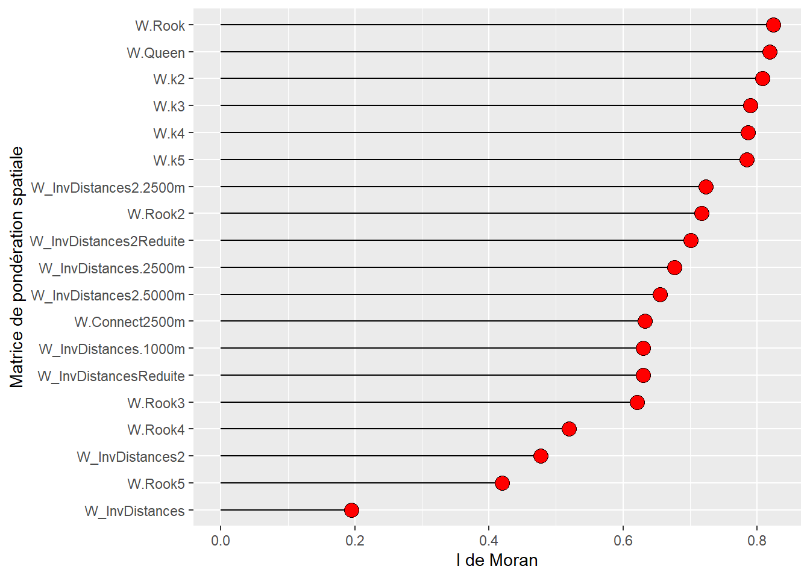
1.4.4.4 Étape 4. Comparaison des valeurs du I de Moran pour plusieurs variables avec la même matrice
La syntaxe ci-dessous permet de calculer la statistique du I de Moran pour plusieurs variables avec la même matrice de pondération spatiale (ici, matrice de contiguïté selon le partage d’un segment).
## Vecteur pour les variables à analyser
liste_vars <- c("Lden", "NO2", "PM25", "VegHautPrt",
"Pct0_14", "Pct_65", "Pct_Img", "TxChom1564", "Pct_brevet", "NivVieMed")
## Boucle pour calculer le I de Moran pour les différentes variables
moran_resultats2 <- t(sapply(liste_vars, function(e){
test <- moran.mc(LyonIris[[e]],
listw=w_rook,
zero.policy = TRUE,
nsim=999)
result <- c(round(test$statistic,4), test$p.value)
}))
moran_resultats2 <- data.frame(moran_resultats2)
names(moran_resultats2) <- c('MoranIs', 'Pvalues')
moran_resultats2$Variable <- liste_vars
rownames(moran_resultats2) <- NULL
print(moran_resultats2) MoranIs Pvalues Variable
1 0.5677 0.001 Lden
2 0.8244 0.001 NO2
3 0.9371 0.001 PM25
4 0.5869 0.001 VegHautPrt
5 0.4421 0.001 Pct0_14
6 0.3013 0.001 Pct_65
7 0.4708 0.001 Pct_Img
8 0.2944 0.001 TxChom1564
9 0.5323 0.001 Pct_brevet
10 0.6286 0.001 NivVieMedDe nouveau, en quelques lignes de code, il est aisé de réaliser un graphique pour comparer les valeurs du I de Moran pour les différentes variables (figure 1.13).
library(ggplot2)
ggplot(data=moran_resultats2, aes(x=reorder(Variable,MoranIs), y=MoranIs)) +
geom_segment( aes(x=reorder(Variable,MoranIs), xend=reorder(Variable,MoranIs), y=0, yend=MoranIs)) +
geom_point( size=4,fill="red",shape=21)+
xlab("Variable continue") + ylab("I de Moran")+
coord_flip()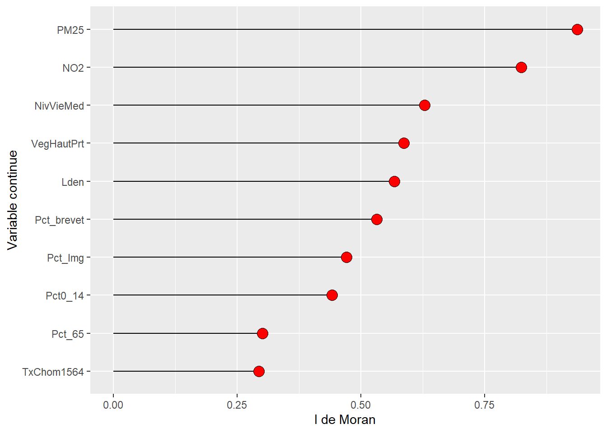
1.5 Bref retour sur la régression linéaire multiple
À titre de rappel, la régression linéaire multiple permet d’exprimer une variable d’intérêt, habituellement notée par le terme variable dépendante (\(y\)) en fonction de plusieurs variables que l’on pense liées, théoriquement, à la variable d’intérêt. Celles-ci sont habituellement désignées comme des variables explicatives ou indépendantes (notées \(x_k\)).
L’équation de régression s’écrit alors :
\[ y_i = \alpha + \beta_1 x_{1i} + \beta_2 x_{2i} + \dots + \beta_K x_{Ki} + \varepsilon_i \tag{1.11}\]
Où :
\(y_i\), est la valeur de la variable dépendante \(y\) pour l’observation spatiale \(i\).
\(x_{ki}\), est la valeur de la variable indépendante \(x_k\) pour l’observation spatiale \(i\).
\(\alpha\), est le paramètre d’ordonnée à l’origine, ou encore la constante. Elle représente la valeur moyenne de la variable dépendante lorsque l’ensemble des variables indépendantes (ou explicatives) sont nulles.
\(k=1,2,\dots,K\) est le nombre de variables indépendantes.
\(\beta_1\) à \(\beta_K\), sont les coefficients de régression liés à chacune des variables indépendantes.
\(\varepsilon_i\), est le terme d’erreur, soit la partie de la valeur de la variable dépendante qui n’est pas expliquée par le modèle de régression. Le terme d’erreur est habituellement supposé de moyenne nulle, de variance homogène et indépendant.
À noter que le terme d’erreur est, par définition, inobservable. En revanche, il est possible d’approximer cette valeur en calculant le résidu, \(\hat{\varepsilon}_i\), parfois aussi noté \(\hat{e}_i\) (équations 1.12 et 1.13).
\[ \hat{\varepsilon}_i = \hat{y}_i - y_i \tag{1.12}\] \[ \hat{\varepsilon}_i = y_i - \left[\hat{\alpha} + \hat{\beta}_1 x_{1i} + \hat{\beta}_2 x_{2i} + \cdots + \hat{\beta}_K x_{Ki}\right] \tag{1.13}\]
Il existe plusieurs manières d’exprimer cette relation sous forme plus compacte. L’une de celles-ci consiste à introduire le terme de sommation dans l’équation :
\[ y_i = \alpha + \sum_{k=1}^K \beta_k x_{ki} + \varepsilon_i \tag{1.14}\]
Une autre approche, plus pratique et compacte, consiste à utiliser la notation matricielle :
\[ y = \iota \alpha + \mathbf{X} \beta + \varepsilon \tag{1.15}\]
Où :
\(y\), est un vecteur de dimension \((N \times 1)\) où N est le nombre total d’observations mobilisées dans l’analyse, avec \(i=1,2,\dots,N\).
\(\iota\) est un vecteur de dimension \((N \times 1)\) comportant uniquement des valeurs de 1.
\(\mathbf{X}\), une matrice de dimension \((N \times K)\) renfermant l’ensemble des \(K\) vecteurs de variables explicatives en plus d’une colonne de 1, dans la première colonne de la matrice, pour la constante, d’où \((K+1)\).
\(\alpha\) est un scalaire identifiant l’ordonnée à l’origine.
\(\beta\), est un vecteur de dimension \((K+1)\) qui renferme l’ensemble des coefficients de régression, pour les \(K\) variables indépendantes et la constante.
\(\varepsilon\), un vecteur de dimension \((N \times 1)\) des termes d’erreurs.
De manière plus explicite, les différents vecteurs et matrices prennent les formes suivantes :
\[ y = \begin{bmatrix} y_1 \\ y_2 \\ \vdots \\ y_i \\ \vdots \\ y_N \end{bmatrix} \tag{1.16}\]
\[ \iota = \begin{bmatrix} 1 \\ 1 \\ \vdots \\ 1 \\ \vdots \\ 1 \end{bmatrix} \tag{1.17}\]
\[ \mathbf{X} = \begin{bmatrix} x_{11} & x_{12} & x_{13} & \cdots & x_{1k} & \cdots & x_{1K} \\ x_{21} & x_{22} & x_{23} & \cdots & x_{2k} & \cdots & x_{2K} \\ \vdots & \vdots & \vdots & \ddots & \vdots & \ddots & \vdots \\ x_{i1} & x_{i2} & x_{i3} & \cdots & x_{ik} & \cdots & x_{iK} \\ \vdots & \vdots & \vdots & \ddots & \vdots & \ddots & \vdots \\ x_{N1} & x_{N2} & x_{N3} & \cdots & x_{Nk} & \cdots & x_{NK} \end{bmatrix} \tag{1.18}\]
\[ \beta = \begin{bmatrix} \beta_{0} \\ \beta_{1} \\ \vdots \\ \beta_{k} \\ \vdots \\ \beta_{K} \end{bmatrix} \tag{1.19}\]
Les modèles de régression linéaire sont largement mobilisés lorsqu’on s’intéresse à l’effet d’une variable spécifique sur le comportement de la variable d’intérêt. Le terme « effet marginal » est souvent associé aux coefficients estimés, \(\beta_k\). Les coefficients permettent de simuler l’effet d’une variation d’une variable dépendante, \(\Delta{x_k}\), sur la variation du comportement de la variable expliquée, \(\Delta{y}\).
En termes plus techniques, les effets marginaux permettent d’exprimer l’effet de la dérivée partielle, c’est-à-dire d’isoler comment la variable d’intérêt bouge lorsqu’une des variables indépendantes bouge :
\[ \frac{\partial y}{\partial x_k}=\beta_k \tag{1.20}\]
Ces effets sont habituellement l’essence de l’intérêt des modèles de régression. Par exemple, une variation de deux unités de la variable \(x_k\) devrait entraîner une variation dans \(y\) de \(2\beta_k\) unités, toutes choses étant égales par ailleurs. Cette analyse est souvent le centre d’intérêt des modèles de régression, bien que l’interprétation causale ne soit pas nécessairement directe (Dubé et al. 2024).
Régression linéaire multiple
Afin de bien maîtriser les principes de base et les hypothèses de la régression linéaire multiple, de mesurer la qualité d’ajustement du modèle, d’introduire des variables explicatives particulières (variable qualitative dichotomique ou polytomique, variable d’interaction, etc.), d’interpréter les résultats d’un modèle de régression et de le mettre en œuvre dans R, nous vous invitons à lire le chapitre suivant (Apparicio et Gelb 2022).
1.6 Pourquoi recourir à des régressions spatiales?
Deux motivations principales peuvent conduire à réaliser des régressions spatiales : la dépendance spatiale ou l’hétérogénéité du modèle de régression classique appliqué à des données spatiales (Chi et Zhu 2019, 41‑43).
1.6.1 Dépendance spatiale
Dans un modèle, les résidus (\(\epsilon\)) sont la différence entre les valeurs observées (\(y_i\)) et les valeurs prédites par le modèle (\(\widehat{y_i}\)). Une des hypothèses de la régression linéaire multiple est que les observations doivent être indépendantes les unes des autres (indépendance du terme d’erreur). Le non-respect de cette hypothèse produit des résultats biaisés, notamment pour les coefficients de régression. Un simple test de présence d’autocorrélation spatiale entre les résidus permet de vérifier si cette hypothèse est respectée (section 1.4).
Le rejet de cette hypothèse d’indépendance rend les coefficients estimés, selon la forme fonctionnelle postulée (ou processus générateur des données – PGD), par le modèle biaisés et/ou biaise le calcul des écarts-types, invalidant ainsi les tests de significativité usuels. La présence d’autocorrélation spatiale entre les résidus est donc un premier test nécessaire pour s’assurer de la qualité des résultats issus du modèle de régression linéaire.
À noter qu’une autocorrélation spatiale entre certaines variables observables, dépendantes ou indépendantes est possible sans pour autant que les résidus soient autocorrélés. Dans ce cas, les relations entre les variables indépendantes permettent de capter l’effet spatial contenu dans la variable dépendante et les résultats d’estimations sont valides si les résidus sont homoscédastiques, c’est-à-dire de variance homogène (autrement, le problème peut facilement être réglé par un simple ajout d’option dans la commande du modèle de régression). Ce n’est donc pas sur les variables observables que le test de détection d’autocorrélation spatiale est important, mais bien sur les résidus du modèle.
Pour être valides, les résultats d’un modèle de régression linéaire construit avec des données spatiales ne devraient pas avoir des résidus spatialement autocorrélés. Si c’est le cas, alors certaines options sont envisageables pour tenter de remédier à la situation. La plus simple étant l’ajout de variables indépendantes spatialement structurées, afin de capter l’autocorrélation résiduelle. Les méthodes plus avancées proposent d’intégrer formellement cette relation spatiale dans le PGD.
Pour illustrer le problème de dépendance spatiale d’un modèle, nous calculons le modèle MCO suivant avec le jeu de données des IRIS de l’agglomération lyonnaise : lm(PM25 ~ Pct0_14 + Pct_65 + Pct_Img + Pct_brevet + NivVieMed, data = LyonIris).
load("data/Lyon.Rdata")
## Modèle MCO
modele_MCO <- lm(PM25 ~ Pct0_14 + Pct_65 + Pct_Img + Pct_brevet + NivVieMed, data = LyonIris)
summary(modele_MCO)
Call:
lm(formula = PM25 ~ Pct0_14 + Pct_65 + Pct_Img + Pct_brevet +
NivVieMed, data = LyonIris)
Residuals:
Min 1Q Median 3Q Max
-6.8510 -1.1962 -0.0094 1.2337 7.5446
Coefficients:
Estimate Std. Error t value Pr(>|t|)
(Intercept) 23.382778 0.775600 30.148 < 2e-16 ***
Pct0_14 -0.151750 0.016326 -9.295 < 2e-16 ***
Pct_65 -0.049786 0.014571 -3.417 0.000685 ***
Pct_Img 0.088013 0.013240 6.648 7.82e-11 ***
Pct_brevet -0.076002 0.009635 -7.888 1.94e-14 ***
NivVieMed -0.113065 0.026357 -4.290 2.15e-05 ***
---
Signif. codes: 0 '***' 0.001 '**' 0.01 '*' 0.05 '.' 0.1 ' ' 1
Residual standard error: 1.731 on 500 degrees of freedom
Multiple R-squared: 0.3539, Adjusted R-squared: 0.3474
F-statistic: 54.78 on 5 and 500 DF, p-value: < 2.2e-16Pour vérifier la dépendance spatiale du modèle, nous calculons le I de Moran sur les résidus avec la fonction lm.morantest du package spdep et nous cartographions les résidus avec le package tmap. La statistique du I de Moran sur les résidus (I = 0,66, p < 0,001) indique clairement que le modèle OLS a un problème de dépendance spatiale et que ses coefficients de régression reportés plus haut sont certainement biaisés. Aussi, la cartographie des coefficients de régression montre des résidus positifs dans les IRIS des quartiers centraux, tandis que les résidus négatifs sont concentrés dans les IRIS des quartiers ou des municipalités périphériques (figure 1.14). Par conséquent, le recours à des régressions spatiales est certainement nécessaire pour remédier à ce problème de dépendance spatiale du modèle MCO.
library(spdep)
library(tmap)
## Modèle MCO
LyonIris$MCO.Residus <- modele_MCO$residuals
## Matrice de contiguïté
nb_rook <- poly2nb(LyonIris, queen = TRUE)
w_rook<- nb2listw(nb_rook, zero.policy = TRUE, style = "W")
# I de Moran sur les résidus du modèle global (MCO)
lm.morantest(modele_MCO, w_rook)
Global Moran I for regression residuals
data:
model: lm(formula = PM25 ~ Pct0_14 + Pct_65 + Pct_Img + Pct_brevet +
NivVieMed, data = LyonIris)
weights: w_rook
Moran I statistic standard deviate = 24.453, p-value < 2.2e-16
alternative hypothesis: greater
sample estimates:
Observed Moran I Expectation Variance
0.6552777081 -0.0053724124 0.0007299083 # Cartographie des résidus
tmap_mode("plot")
tm_shape(LyonIris)+
tm_borders(col = "gray25", lwd=.5)+
tm_fill(col = "MCO.Residus",
n = 6,
style = "pretty",
legend.format = list(text.separator = "à",
decimal.mark = ","),
midpoint = 0,
palette = "-RdBu",
title = "MCO") +
tm_layout(frame = FALSE)+
tm_scale_bar(breaks = c(0,5))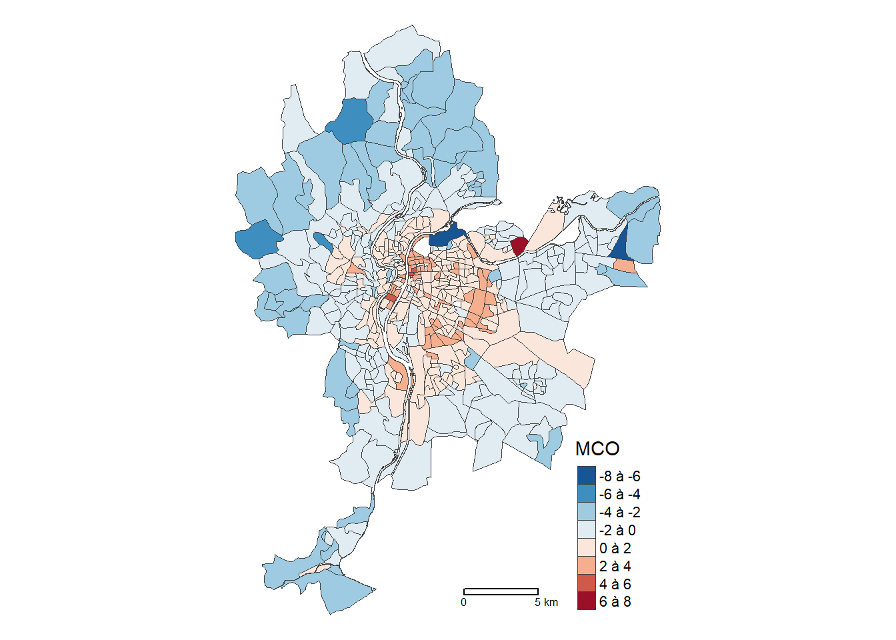
Dépendance spatiale et méthodes de régression spatiale : quelles solutions?
Les modèles d’économétrie spatiale (chapitre 2 et chapitre 3) sont des solutions particulièrement intéressantes pour remédier au problème de dépendance spatiale d’un modèle et obtenir des coefficients de régression non biaisés.
Les modèles linéaires généralisés et ceux avec filtrage spatial (chapitre 7) permettent de capturer les tendances spatiales en résumant la matrice de pondération spatiale \(W\).
1.6.2 Hétérogénéité spatiale
L’hétérogénéité ou la non-stationnarité (spatial heterogeneity ou nonstationarity) se manifeste quand les relations entre les variables dépendante et indépendantes varient dans l’espace (en d’autres termes à travers les entités spatiales du jeu de données). Cela contrevient ainsi à l’hypothèse de l’homogénéité spatiale ou de stationnarité spatiale selon laquelle les coefficients du modèle doivent être constant dans l’espace.
Hétérogénéité ou non-stationnarité spatiale et méthodes de régression spatiale : quelles solutions?
Les régressions géographiquement pondérées (chapitre 4 et chapitre 5), sont des outils d’exploration particulièrement adaptés pour explorer et cartographier l’instabilité des relations entre les variables dépendante et indépendantes d’un modèle de régression.
Les modèles généralisés additifs (chapitre 6) permettent d’introduire des lissages spatiaux pour capturer les tendances spatiales, soit de manière continues (avec une spline bivariée sur les coordonnées géographiques), soit de manière discrète (avec un lissage par champ aléatoire de Markov).
1.7 Quiz de révision
Parmi les matrices de pondération spatiale ci-dessous, lesquelles sont des matrices de contiguïté?
Relisez au besoin la section 1.2.
En anglais, comment est appelée une matrice selon le partage d’un nœud?
Relisez au besoin le début de la section 1.2.
Comparativement à une matrice de l’inverse de la distance, une matrice de l’inverse de la distance au carré accorde un poids plus important aux entités proches.
Relisez au besoin la section 1.2.2.2.
Quels sont les avantages de la standardisation en ligne des matrices de pondération spatiale?
Relisez au besoin la section 1.2.3.
Avec une matrice standardisée, la statistique du I de Moran varien théoriquement de :
Relisez au besoin la section 1.4.2.
Quelles sont les trois manières de tester la significativité du I de Moran?
Relisez au besoin la section 1.4.3.
1.8 Exercices de révision
Exercice 2. Matrice de contiguïté selon le partage d’un segment et le I de Moran
load("data/Lyon.Rdata")
library(spdep)
## Matrice de contiguïté selon le partage d’un nœud (Queen)
à compléter
# I de Moran sur la variable Lden selon l’hypothèse de la normalité
à compléter)
# I de Moran sur la variable Lden selon la normalité selon l’hypothèse de la randomisation
à compléter
# I de Moran sur la variable Lden selon des permutations Monte-Carlo
à compléterCorrection à la section 10.1.1.
Exercice 2. Modèle MCO et dépendance spatiale
load("data/Lyon.Rdata")
library(spdep)
# Modèle MCO
formule <- "Lden ~ Pct0_14 + Pct_65 + Pct_Img + Pct_brevet + NivVieMed"
à compléter
# Résultats du modèle
à compléter
## Matrice de contiguïté (Rook)
à compléter
# I de Moran sur les résidus du modèle global (MCO)
à compléter
# Cartographie des résidus
à compléterCorrection à la section 10.1.2.